Chapter 6: Virtualization & Hypervisors¶
Virtualization lets one physical machine run many isolated operating systems, and it underpins every cloud and almost every data centre. This chapter explains why we virtualize, how hypervisors trap and emulate privileged operations, Type 1 versus Type 2 designs, and the CPU features — VT-x, AMD-V, EPT/NPT, IOMMU, SR-IOV — that make it fast. It then tours the major platforms (KVM/QEMU/libvirt, Hyper-V, VMware vSphere after Broadcom, Xen, Proxmox VE, Nutanix AHV, OpenStack and desktop hypervisors), the VM lifecycle from templates to live migration and HA, microVMs for serverless, how VMs compare with containers, and virtual desktops.
6.1 Why Virtualize? Ideas and a Short History¶
Virtualization lets one physical computer pretend to be many separate computers, called virtual machines (VMs). A thin layer of software, the hypervisor, shares out the real CPU, memory, disks and network so that each VM runs its own complete operating system as if it owned the hardware. It is the foundation of every public cloud and of almost every company data centre.
Think of it like…
A physical server is like a big house where one family uses only the kitchen; virtualization turns it into a block of flats — each household (VM) gets its own front door, rooms and lock, while sharing the building's foundations, plumbing and electricity (the hardware).
Real-world example
The fictional Pinewood Insurance had 60 physical servers, most using under 10% of their CPU. Systems engineer Grace consolidates them as VMs onto four modern hosts. Power and cooling costs drop sharply, new servers are ready in ten minutes instead of six weeks, and when one host fails its VMs restart automatically on the others.
How it works¶
- Install a hypervisor on the physical host (or use a cloud provider's).
- Create VMs, each with virtual CPUs, memory, disks and network cards drawn from the host's pools.
- Install a guest operating system and applications inside each VM, exactly as on a physical server.
- The hypervisor schedules vCPUs onto real cores, maps guest memory to real RAM and routes virtual I/O to real devices.
- Management tools add snapshots, templates, live migration and high availability across many hosts.
Who uses it
Systems administrators, cloud and infrastructure engineers, data-centre architects, DevOps teams, security researchers who analyse malware safely and students building home labs.
Key takeaway
Know the core benefits for interviews: consolidation (higher utilisation), isolation, encapsulation (a VM is just files), hardware independence, and fast provisioning, snapshots and migration.
Going deeper
- IBM's CP-40 (1967) and CP-67 ran several copies of an OS on one mainframe; VM/370 (1972) made it a product, and IBM z/VM still runs thousands of Linux guests on today's IBM Z mainframes.
- Before virtualization, x86 servers commonly ran one application each at roughly 5-15% average CPU utilisation; consolidation ratios of 10:1 or more were the original business case.
- VMware (founded 1998) made x86 virtualization practical with Workstation in 1999 and ESX Server in 2001, using binary translation because x86 could not be virtualized by trapping alone.
- Amazon EC2 launched in 2006 on the Xen hypervisor; from 2017 AWS moved to its Nitro system, a KVM-based hypervisor with I/O offloaded to dedicated Nitro cards.
- Encapsulation means a VM is a handful of files (configuration, disks, memory state), which is what makes copying, backing up, snapshotting and migrating whole servers possible.
- Hypervisors also enable isolation for security: Windows VBS, Android's protected VMs, Qubes OS and cloud multi-tenancy all rely on the hypervisor as a strong boundary.
Common mistakes & misconceptions
- Thinking virtualization makes software faster — it adds a small overhead (often a few percent for CPU-bound work); the gains are utilisation, flexibility and recovery.
- Confusing virtualization with emulation — a hypervisor runs guest code directly on the same CPU architecture; emulators like QEMU's TCG translate other architectures, far slower.
- Assuming more VMs is always better — oversubscribing CPU and memory causes contention, ballooning and swapping that hurt every VM on the host.
Try it: Check whether your own CPU supports hardware virtualization¶
# Linux: count CPU threads that advertise Intel VT-x (vmx) or AMD-V (svm)
grep -Ec '(vmx|svm)' /proc/cpuinfo
ls -l /dev/kvm 2>/dev/null && echo 'KVM ready'
# Windows (PowerShell): look for 'Virtualization Enabled In Firmware'
systeminfo | Select-String 'Hyper-V|Virtualization'
# macOS on Apple silicon: hardware virtualization is always available
sysctl kern.hv_support
Key kernels, commands, tools, standards & concepts¶
| Name | What it does | Example |
|---|---|---|
| Virtual machine (VM) General · Concept · Current · Beginner |
A software-defined computer with virtual CPU, memory, disk and network devices, running its own operating system. | A developer runs Windows Server 2025, Ubuntu and a firewall appliance as three VMs on one laptop. |
| Hypervisor (virtual machine monitor) General · Concept · Current · Beginner |
The software layer that creates VMs, shares hardware between them and keeps them isolated. | ESXi, Hyper-V, KVM and Xen are hypervisors; each can host dozens of VMs per server. |
| Server consolidation General · Concept · Current · Beginner |
Running many lightly loaded workloads as VMs on fewer, busier physical servers. | Pinewood replaces 60 servers at under 10% CPU with four hosts running about 70% average. |
| Encapsulation General · Concept · Current · Beginner |
A whole VM is stored as files — configuration, virtual disks and saved state — that can be copied and moved. | An admin copies a VM's .vmx and .vmdk files to another datastore to clone a test server. |
| Isolation General · Concept · Current · Beginner |
VMs cannot see each other's memory or disks; a crash or compromise in one should not affect the others. | A malware analyst detonates ransomware inside a VM, then reverts it, leaving the host untouched. |
| Guest and host General · Concept · Current · Beginner |
The host is the physical machine running the hypervisor; guests are the operating systems inside VMs. | A Windows 11 host runs an Ubuntu guest in VirtualBox for a Linux course. |
| IBM CP-40 / CP-67 / VM/370 IBM (1967-1972) · Operating system · Legacy · Intermediate |
Pioneering mainframe systems that ran multiple full virtual machines, establishing the hypervisor idea. | Students on 1970s mainframes each had a private virtual machine running the CMS single-user OS. |
| IBM z/VM IBM · Software · Current · Advanced |
Today's descendant of VM/370, hosting large numbers of Linux and z/OS guests on IBM Z mainframes. | A bank consolidates hundreds of Linux servers as guests under z/VM on a single mainframe. |
| Hardware independence General · Concept · Current · Beginner |
VMs see standard virtual hardware, so they can move between different physical server models without reinstalling. | Pinewood moves its VMs from old Dell hosts to new HPE hosts without changing drivers inside the guests. |
| Emulation vs virtualization General · Concept · Current · Intermediate |
Emulation interprets or translates another CPU's instructions; virtualization runs guest code natively on the same CPU type. | QEMU emulates an Arm board on an x86 PC slowly, but with KVM it virtualizes x86 guests at near-native speed. |
| Amazon EC2 and Nitro Amazon Web Services (2006; Nitro 2017) · Platform · Current · Intermediate |
AWS's VM service, first built on Xen, now on the Nitro hypervisor with networking and storage on dedicated cards. | Launching an m7i.large instance starts a Nitro-based VM with 2 vCPUs and 8 GiB of memory in about a minute. |
| Virtualization overhead General · Concept · Current · Intermediate |
The extra cost of VM exits, address translation and virtual I/O; small with hardware assist and paravirtual drivers. | A CPU-bound benchmark runs within a few percent of bare metal, but an emulated disk is much slower than virtio. |
| Multi-tenancy General · Concept · Current · Intermediate |
Running workloads from different customers or teams on shared hardware, relying on the hypervisor for isolation. | Two competing retailers' VMs may share one cloud host without ever seeing each other's data. |
6.2 How a Hypervisor Works: Popek-Goldberg and Trap-and-Emulate¶
A guest OS expects to control the CPU completely, but the hypervisor cannot allow that. The classic trick is trap-and-emulate: run the guest kernel with reduced privileges, so whenever it tries a privileged operation the CPU 'traps' to the hypervisor, which performs a safe, virtual version of the operation and resumes the guest. Popek and Goldberg proved in 1974 exactly when this works.

Think of it like…
Trap-and-emulate is like a hotel guest trying to adjust the building's main thermostat: the panel is locked, so a staff member appears, adjusts only the temperature in that guest's room, and lets the guest believe they changed the setting.
Real-world example
Ravi, a student at the fictional Westbridge Polytechnic, writes a toy hypervisor for an OS course. When his guest kernel executes HLT to idle, the CPU exits to his code; he marks the vCPU idle and runs another VM. When the guest reads CPUID, his hypervisor hides the host's real model and reports a generic CPU — trap-and-emulate in action.
How it works¶
- The hypervisor runs at the highest privilege; the guest kernel runs deprivileged (classically ring 1 or 3, today VMX non-root mode).
- Ordinary instructions (adds, loads, most jumps) run directly on the CPU at full speed.
- A privileged or sensitive instruction (such as changing page tables or disabling interrupts) traps to the hypervisor.
- The hypervisor decodes the instruction and applies it to the VM's virtual CPU state and virtual devices only.
- The hypervisor resumes the guest at the next instruction; the guest never notices the detour.
Who uses it
Hypervisor and kernel developers, cloud platform engineers, security researchers studying VM escapes, and students on operating-systems courses.
Key takeaway
State the Popek-Goldberg theorem precisely: an efficient VMM can be built if every sensitive instruction is also privileged (so it traps); classic x86 broke this rule.
Going deeper
- Popek and Goldberg's 1974 paper 'Formal Requirements for Virtualizable Third Generation Architectures' defines three VMM properties: equivalence (fidelity), resource control (safety) and efficiency (most instructions run natively).
- Sensitive instructions read or change machine state (control registers, interrupt flags, I/O); privileged instructions trap when run outside the most privileged mode. Virtualizable means sensitive is a subset of privileged.
- A 2000 analysis by Robin and Irvine found 17 sensitive but unprivileged instructions on the Pentium, including POPF, PUSHF, SGDT, SIDT, SMSW, LAR and LSL — the reason x86 needed binary translation or paravirtualization.
- Three historical answers to x86's flaw: binary translation (VMware 1999), paravirtualization where the guest calls the hypervisor explicitly (Xen 2003), and hardware assist that adds a new guest mode (Intel VT-x 2005, AMD-V 2006).
- Memory is the hardest part: early hypervisors kept shadow page tables that mirrored every guest page-table change, causing many exits until EPT and NPT moved this into hardware.
- Each VM exit and re-entry costs from hundreds to a few thousand CPU cycles, so hypervisor engineering is largely about avoiding exits — for example with posted interrupts and paravirtual devices.
- A bug in the hypervisor's emulation code can become a 'VM escape'; the 2015 VENOM flaw in QEMU's virtual floppy controller (CVE-2015-3456) is a famous example.
Common mistakes & misconceptions
- Assuming the guest runs in an emulator — with trap-and-emulate nearly all guest instructions run natively; only a small fraction trap.
- Thinking 'privileged' and 'sensitive' mean the same — the gap between them is exactly what made classic x86 hard to virtualize.
- Believing VMs are perfectly invisible — timing differences, CPUID flags and virtual device names let software detect it is in a VM.
Try it: See VM exits happening on a Linux KVM host (needs root and a running VM)¶
# Summarise KVM exit reasons for 10 seconds (perf with KVM support)
sudo perf kvm stat record -a sleep 10
sudo perf kvm stat report
# Or count exits through tracepoints
sudo perf stat -e 'kvm:kvm_exit' -a sleep 5
Key kernels, commands, tools, standards & concepts¶
| Name | What it does | Example |
|---|---|---|
| Popek and Goldberg virtualization requirements Gerald Popek and Robert Goldberg (1974) · Concept · Current · Intermediate |
Formal conditions for building an efficient VMM: sensitive instructions must be a subset of privileged ones. | Exam answer: classic x86 failed because POPF changed interrupt state without trapping in user mode. |
| Equivalence, resource control, efficiency Popek and Goldberg (1974) · Concept · Current · Intermediate |
The three properties of a VMM: behave like real hardware, keep full control of resources, run most code natively. | An emulator meets equivalence and control but fails efficiency because every instruction is interpreted. |
| Innocuous instruction Popek and Goldberg · Concept · Current · Intermediate |
An instruction that is neither privileged nor sensitive, so a guest can run it directly at full speed. | Arithmetic, loads, stores and most jumps are innocuous — the bulk of guest code never involves the hypervisor. |
| Sensitive instruction Popek and Goldberg · Concept · Current · Intermediate |
An instruction that reads or modifies privileged machine state or behaves differently depending on privilege level. | SGDT reveals the real descriptor-table address even to a deprivileged guest on classic x86. |
| Trap-and-emulate General · Concept · Current · Beginner |
Running the guest deprivileged so privileged operations trap to the hypervisor, which emulates them virtually. | A guest writing to an emulated serial port traps, and the hypervisor appends the byte to a log file. |
| VM exit and VM entry Intel VT-x, AMD-V · Concept · Current · Intermediate |
The hardware switch from guest to hypervisor (exit) and back (entry), saving and restoring CPU state. | perf kvm stat shows EPT_VIOLATION and IO_INSTRUCTION as the most common exit reasons on a busy host. |
| Ring deprivileging x86 (pre-VT-x hypervisors) · Concept · Legacy · Advanced |
Running guest kernels in ring 1 or ring 3 instead of ring 0 so the hypervisor can keep ring 0. | 32-bit Xen ran paravirtual guest kernels in ring 1, using x86 segmentation to protect itself. |
| Shadow page tables VMware, Xen, KVM (pre-EPT/NPT) · Concept · Legacy · Advanced |
Hypervisor-maintained page tables mapping guest virtual addresses directly to host physical addresses. | On a 2006 server, a fork-heavy guest workload caused thousands of exits per second to update shadow tables. |
| Binary translation VMware (1999) · Concept · Legacy · Advanced |
Translating guest kernel code at run time, replacing sensitive instructions with safe calls into the VMM. | VMware's translator cached translated code blocks, so repeated kernel paths ran almost at native speed. |
| Paravirtualization (concept) Xen (2003), Denali · Concept · Current · Intermediate |
Modifying the guest OS to call the hypervisor directly (hypercalls) instead of relying on traps. | A Xen PV Linux guest asks the hypervisor via hypercall to update page tables in batches. |
| Hypercall Xen, KVM, Hyper-V · Concept · Current · Intermediate |
A deliberate call from the guest kernel to the hypervisor, analogous to a system call from an app to a kernel. | A Hyper-V-enlightened Windows guest uses a hypercall to flush remote TLBs efficiently. |
| VM escape General (e.g. VENOM, CVE-2015-3456) · Attack · Current · Advanced |
Exploiting a hypervisor or virtual-device bug so code inside a VM runs on the host or in other VMs. | VENOM let a guest overflow QEMU's floppy controller buffer, forcing urgent patches across clouds. |
| VM detection (red pills) Security research · Concept · Current · Advanced |
Techniques software uses to notice it runs in a VM: CPUID hypervisor bit, device names, timing anomalies. | Some malware checks for VirtualBox Guest Additions and exits to evade analysis sandboxes. |
6.3 Type 1 vs Type 2 Hypervisors¶
Hypervisors come in two classic kinds. A Type 1 ('bare-metal') hypervisor runs directly on the server hardware and is the operating system of the host — examples are VMware ESXi, Microsoft Hyper-V, Xen and KVM-based platforms. A Type 2 ('hosted') hypervisor is an application running on an ordinary desktop OS, such as VirtualBox or VMware Workstation.
Type 1 vs Type 2 at a glance
| Type 1 (bare metal) | Type 2 (hosted) | |
|---|---|---|
| Runs on | hardware directly | a desktop operating system |
| Examples | ESXi, Hyper-V, Xen, KVM, AHV | VirtualBox, Workstation, Parallels |
| Performance | near native, low jitter | good, shares host resources |
| Attack surface | small, dedicated | host OS bugs add risk |
| Management | remote consoles, clusters, APIs | local GUI on one machine |
| Features | HA, live migration, SDN | snapshots, shared folders |
| Typical user | data centres, clouds | developers, students, testers |
The line blurs (KVM, Hyper-V), but the operational difference — server platform vs desktop app — remains useful.
Think of it like…
A Type 1 hypervisor is like a purpose-built apartment block managed by a building company; a Type 2 hypervisor is like renting out spare rooms in your own family house — it works, but the household (host OS) comes first.
Real-world example
The fictional Elm Street Clinic runs its patient-records system on two Type 1 hosts (Proxmox VE) in a locked server room. Its IT contractor, Lucas, uses VMware Workstation Pro (Type 2) on his laptop to test a software upgrade on a copy of the records VM before applying it to production.
How it works¶
- Type 1: power on the server and it boots straight into the hypervisor, which owns CPU scheduling and memory.
- Type 1: VMs are created and managed remotely through a web console or API, often across a cluster.
- Type 2: install the hypervisor app on Windows, macOS or Linux and start it like any program.
- Type 2: the host OS schedules the hypervisor process; a kernel driver gives it access to hardware virtualization.
- Both: guests see virtual hardware and run unmodified operating systems using CPU virtualization extensions.
Who uses it
Infrastructure engineers choose Type 1 for production servers; developers, testers, students and security analysts use Type 2 on their workstations.
Key takeaway
Classic interview point: KVM turns the Linux kernel itself into the hypervisor, and Hyper-V runs beneath Windows (which becomes the 'root partition'), so both are usually classed as Type 1 even though a full OS appears to be present.
Going deeper
- The terms come from Robert Goldberg's 1973 PhD thesis on virtual machine architectures, long before x86 virtualization existed.
- KVM is a Linux kernel module; once loaded, Linux schedules vCPUs as ordinary threads and manages guest memory with its normal memory manager, which is why KVM inherits Linux's scheduler, NUMA and cgroups features.
- When Hyper-V is enabled on Windows 11 or Server, the hypervisor loads first and the Windows you log in to becomes the privileged root partition — which is also how VBS, WSL 2 and Windows Sandbox work.
- Type 2 hypervisors use the host's virtualization APIs: on Windows many now run on top of Hyper-V's Windows Hypervisor Platform, and on macOS they use Apple's Hypervisor.framework or Virtualization.framework.
- ESXi's VMkernel is a purpose-built kernel with a small footprint; it can boot from a small device, while vCenter handles cluster-wide management separately.
- Some classify 'hosted' Type 1 designs separately (Hyper-V root partition, Xen dom0), but in exams the simple rule — runs on hardware vs runs on an OS — is what is expected.
Common mistakes & misconceptions
- Saying Hyper-V is Type 2 because Windows is visible — the hypervisor runs underneath Windows, which is itself a privileged VM.
- Running production servers on a Type 2 hypervisor on a desktop PC — you lose HA, remote management and isolation from desktop activity.
- Assuming two Type 2 hypervisors cannot coexist — modern VirtualBox and VMware Workstation can run on Windows with Hyper-V enabled, though sometimes more slowly.
Try it: Find out whether you are inside a VM, and which hypervisor¶
# Linux
systemd-detect-virt # prints kvm, microsoft, vmware, oracle, xen ... or none
lscpu | grep -i hypervisor
# Windows PowerShell
(Get-CimInstance Win32_ComputerSystem).Model # 'Virtual Machine', 'VMware...' etc.
(Get-CimInstance Win32_ComputerSystem).HypervisorPresent
Key kernels, commands, tools, standards & concepts¶
| Name | What it does | Example |
|---|---|---|
| Type 1 (bare-metal) hypervisor Goldberg (1973) · Concept · Current · Beginner |
A hypervisor running directly on hardware and acting as the host's operating system. | A data-centre server boots ESXi from local flash and runs 40 VMs. |
| Type 2 (hosted) hypervisor Goldberg (1973) · Concept · Current · Beginner |
A hypervisor running as an application on a conventional host operating system. | A student installs VirtualBox on Windows 11 to run Kali Linux for a security course. |
| VMware ESXi Broadcom (VMware) · Software · Current · Beginner |
VMware's Type 1 hypervisor built on the VMkernel, managed individually or through vCenter. | An ESXi host's web client shows CPU ready time to diagnose an overloaded VM. |
| Microsoft Hyper-V Microsoft (2008) · Software · Current · Beginner |
Microsoft's Type 1 hypervisor in Windows Server and Windows Pro/Enterprise, with Windows as the root partition. | Enabling Hyper-V on Windows 11 Pro lets a developer run Linux VMs from Hyper-V Manager. |
| KVM Linux kernel (2007) · Software · Current · Beginner |
Kernel-based Virtual Machine: a Linux module that turns the kernel into a Type 1 hypervisor. | OpenStack, Proxmox VE and Google Compute Engine all run guest VMs on KVM. |
| Xen Xen Project, Linux Foundation (2003) · Software · Current · Intermediate |
A microkernel-style Type 1 hypervisor with a privileged control domain (dom0) managing guests. | XCP-ng hosts boot Xen first, then a Linux dom0 that manages storage and networking. |
| Hypervisor attack surface General · Concept · Current · Intermediate |
The code a guest can reach — emulated devices, hypercalls, the host OS — which attackers target for VM escapes. | A Type 2 hypervisor inherits every vulnerability of the desktop OS underneath it, unlike a minimal ESXi host. |
| Hosted hypervisor kernel drivers Oracle (vboxdrv), Broadcom (vmmon) · Component · Current · Advanced |
Type 2 hypervisors install a kernel driver that switches the CPU into guest mode on behalf of the user-space app. | After a Linux kernel update, VirtualBox VMs fail until the vboxdrv module is rebuilt for the new kernel. |
| Root partition / control domain Hyper-V, Xen (dom0) · Concept · Current · Intermediate |
A privileged VM that owns physical device drivers and management tools on some Type 1 hypervisors. | Rebooting the Windows root partition of a Hyper-V host restarts every guest on that host. |
| Windows Hypervisor Platform (WHP) Microsoft · API · Current · Advanced |
An API letting third-party virtualization software run guests on top of the Hyper-V hypervisor. | VirtualBox and QEMU use WHP on Windows when Hyper-V or VBS is already enabled. |
| Apple Hypervisor and Virtualization frameworks Apple (macOS 10.10+, 11+) · API · Current · Advanced |
macOS APIs giving apps hardware-accelerated VMs; Virtualization.framework adds ready-made virtio devices. | UTM and Parallels Desktop run Linux and macOS guests on Apple silicon through these frameworks. |
| Bare-metal server General · Concept · Current · Beginner |
A physical server dedicated to one tenant, without a hypervisor or with one the customer controls. | A trading firm rents bare-metal cloud servers to avoid hypervisor jitter for latency-sensitive code. |
6.4 Hardware-Assisted Virtualization: VT-x, AMD-V, EPT/NPT, IOMMU, Nesting and Confidential VMs¶
Since 2005-2006, Intel and AMD processors include special virtualization instructions that add a new 'guest mode', so the hypervisor no longer needs tricks like binary translation. Later additions translate guest memory addresses in hardware (EPT/NPT), let devices be safely handed to VMs (IOMMU), allow hypervisors inside VMs (nested virtualization) and even encrypt VM memory from the host (confidential VMs).

Think of it like…
Hardware assist is like a building adding a proper concierge desk and keycard system: instead of staff following guests around (software tricks), the doors themselves know which rooms each keycard may open, and the concierge is called only when something unusual happens.
Real-world example
Wei, a cloud engineer at the fictional Tidewater Hosting, compares two servers: an old one without EPT and a new one with it. A memory-heavy Java service runs about 20% faster on the new host because guest page-table updates no longer cause VM exits. For a healthcare customer she enables AMD SEV-SNP so even Tidewater's administrators cannot read that VM's memory.
How it works¶
- The hypervisor enables virtualization (VMXON on Intel, EFER.SVME on AMD) and sets up a control structure per vCPU (VMCS or VMCB).
- VM entry (VMLAUNCH/VMRESUME or VMRUN) loads guest state and runs the guest in non-root (guest) mode.
- The guest runs natively until an event configured to exit occurs — for example CPUID, I/O port access, an EPT violation or an external interrupt.
- On a VM exit the CPU saves guest state and jumps to the hypervisor, which handles the reason and resumes the guest.
- Memory accesses go through two-stage translation (guest page tables, then EPT/NPT), cached in a TLB tagged per VM (VPID/ASID).
Who uses it
Hypervisor and cloud platform engineers, performance engineers, firmware engineers, security researchers and anyone sizing servers for virtualization.
Key takeaway
Know the vendor names: Intel VT-x + EPT + VT-d; AMD-V (SVM) + NPT/RVI + AMD-Vi; Arm EL2 + Stage-2 translation + SMMU. Virtualization must often be switched on in UEFI setup.
Going deeper
- Intel VT-x first shipped in late 2005 Pentium 4 models and AMD-V (SVM, codenamed Pacifica) in 2006; second-level translation followed with AMD's Rapid Virtualization Indexing (Barcelona, 2007) and Intel EPT (Nehalem, 2008).
- With 4-level tables on both stages, a worst-case TLB miss needs up to 24 memory references instead of 4, which is why large pages (2 MB, 1 GB) and big TLBs matter so much to VM performance.
- VPID (Intel) and ASID (AMD) tag TLB entries with a VM identifier so the TLB need not be flushed on every VM switch; APICv/AVIC and posted interrupts deliver interrupts to guests without exits.
- An IOMMU (Intel VT-d, AMD-Vi, Arm SMMU) translates and restricts device DMA, so a device assigned to a VM can only reach that VM's memory — essential for passthrough and SR-IOV.
- On Arm, hypervisors run at exception level EL2 with Stage-2 translation; the Virtualization Host Extensions (ARMv8.1) let a host kernel such as Linux/KVM run entirely in EL2 for lower overhead.
- Nested virtualization runs a hypervisor inside a VM; Intel VMCS shadowing reduces its cost, and clouds such as Azure and Google Cloud offer it on selected VM types for labs, CI and WSL inside VMs.
- Confidential VMs encrypt guest memory with keys the host cannot read: AMD SEV (2016), SEV-ES and SEV-SNP (EPYC 7003, 2021), Intel TDX (Xeon, from 2023) and Arm CCA Realms (Armv9), all with remote attestation.
Common mistakes & misconceptions
- Forgetting to enable VT-x/AMD-V or the IOMMU in UEFI setup — many PCs ship with them off, and hypervisors then fail or fall back to slow emulation.
- Expecting nested virtualization to be fast — every level multiplies exits; use it for labs and testing, not heavy production workloads.
- Assuming confidential VMs protect against bugs in your own guest OS — they protect memory from the host and operator, not from an attacker inside the VM.
Try it: Inspect virtualization features of your CPU (Linux)¶
grep -o -E 'vmx|svm|ept|npt|vpid' /proc/cpuinfo | sort | uniq -c
cat /sys/module/kvm_intel/parameters/nested 2>/dev/null # Y/1 = nested enabled (Intel)
cat /sys/module/kvm_amd/parameters/nested 2>/dev/null # AMD
dmesg | grep -i -E 'DMAR|AMD-Vi|IOMMU' | head -5
Key kernels, commands, tools, standards & concepts¶
| Name | What it does | Example |
|---|---|---|
| Intel VT-x Intel (2005) · Concept · Current · Intermediate |
Intel's CPU virtualization extensions adding VMX root (hypervisor) and non-root (guest) modes. | The 'vmx' flag in /proc/cpuinfo tells you KVM can use VT-x on that machine. |
| AMD-V (SVM) AMD (2006) · Concept · Current · Intermediate |
AMD's Secure Virtual Machine extensions, entering guests with VMRUN and a VMCB control block. | The 'svm' flag on a Ryzen laptop shows AMD-V is available once enabled in firmware setup. |
| VMCS / VMCB Intel / AMD · Concept · Current · Advanced |
Per-vCPU in-memory control structures holding guest state, host state and which events cause VM exits. | KVM sets the VMCS to exit on CPUID so it can hide host CPU features from guests. |
| EPT / NPT (second-level address translation) Intel (2008) / AMD (2007) · Concept · Current · Intermediate |
Hardware page tables mapping guest-physical to host-physical memory, removing shadow page tables. | Tidewater's memory-heavy Java service runs faster on hosts with EPT because page-table changes no longer exit. |
| VPID / ASID Intel / AMD · Concept · Current · Advanced |
TLB tags identifying which VM an address translation belongs to, avoiding full TLB flushes on VM switches. | Two busy VMs on one core keep their cached translations because their TLB entries carry different VPIDs. |
| APICv, AVIC and posted interrupts Intel / AMD · Concept · Current · Advanced |
Hardware support for virtual interrupt controllers so interrupts reach guests without VM exits. | A network-heavy VM handles more packets per second once posted interrupts are enabled. |
| IOMMU (Intel VT-d, AMD-Vi, Arm SMMU) Intel, AMD, Arm · Component · Current · Intermediate |
Translates and restricts device DMA addresses, enabling safe device assignment to VMs. | Booting Linux with intel_iommu=on lets an admin pass a GPU through to a VM using VFIO. |
| Arm EL2 and VHE Arm (ARMv7-A virtualization extensions; ARMv8.1 VHE) · Concept · Current · Advanced |
Arm's hypervisor exception level and the extension letting a host OS kernel run directly in EL2. | KVM on an AWS Graviton or Ampere server runs the host kernel in EL2 using VHE. |
| Nested virtualization Intel, AMD, KVM, Hyper-V, clouds · Concept · Current · Intermediate |
Running a hypervisor inside a VM, with the outer hypervisor emulating virtualization extensions to it. | A trainer runs a three-node Proxmox lab inside cloud VMs that support nested virtualization. |
| VMCS shadowing Intel (Haswell, 2013) · Concept · Current · Advanced |
Lets a nested hypervisor read and write its VMCS without exiting to the outer hypervisor every time. | Nested KVM on a modern Xeon spends far fewer cycles in exits thanks to VMCS shadowing. |
| AMD SEV-SNP AMD (EPYC, 2021) · Concept · Current · Advanced |
Encrypts each VM's memory with its own key and adds integrity protection plus attestation against a malicious host. | A hospital runs patient analytics in Azure confidential VMs backed by SEV-SNP. |
| Intel TDX (Trust Domain Extensions) Intel (Xeon, 2023+) · Concept · Current · Advanced |
Runs VMs as isolated 'trust domains' whose memory and CPU state are hidden from the hypervisor. | Google Cloud's C3 confidential VMs use TDX so customers can attest the guest before sending secrets. |
| Arm Confidential Compute Architecture (CCA) Arm (Armv9-A) · Concept · Emerging · Advanced |
Adds 'Realms' — protected VM environments isolated from both the normal-world hypervisor and the OS. | Future Arm servers can run a Realm VM whose memory even the cloud host's hypervisor cannot read. |
| Hardware performance of virtualization General · Concept · Current · Intermediate |
With VT-x/AMD-V, EPT/NPT and paravirtual I/O, typical CPU-bound workloads run within a few percent of bare metal. | A benchmark compiling the Linux kernel takes 102 seconds on bare metal and 105 in a KVM VM. |
6.5 Virtual I/O: Emulation, Paravirtualization, virtio, Passthrough and SR-IOV¶
A VM needs disks, network cards and graphics, but the real devices are shared. Hypervisors offer three main options: emulate a well-known real device (most compatible, slowest), provide a paravirtual device designed for VMs such as virtio (fast, needs a driver), or hand a real device directly to the VM with passthrough or SR-IOV (fastest, least flexible).

Think of it like…
Device I/O is like getting post in a shared building: emulation is a concierge who opens and retypes every letter, paravirtualization is a shared post room with labelled pigeonholes, and passthrough gives your flat its own private letterbox on the street.
Real-world example
At the fictional Copperleaf Games studio, a build server VM uses an emulated e1000 network card and only reaches 2 Gbit/s. Systems engineer Ines switches it to virtio-net with vhost-net, and throughput rises close to the 25 Gbit/s link. For the GPU-rendering VM she passes an entire graphics card through using VFIO and the IOMMU.
How it works¶
- Emulated device: the guest's normal driver touches virtual registers, each access traps, and QEMU or the hypervisor mimics the real hardware.
- Paravirtual device: the guest's virtio driver puts requests in shared-memory queues (virtqueues) and sends one notification for a batch.
- The back end (QEMU, vhost in the host kernel or vhost-user in a user-space switch) processes the queue and talks to real hardware.
- Passthrough: the IOMMU maps a physical device into the VM, and the guest's native driver controls it directly.
- SR-IOV: one physical card exposes many Virtual Functions, each passed to a different VM with near-native performance.
Who uses it
Virtualization and cloud engineers, network and storage engineers, performance tuners, GPU/AI infrastructure teams and telecom (NFV) engineers.
Key takeaway
Rule of thumb: always use paravirtual drivers (virtio, Hyper-V synthetic devices, VMware VMXNET3/PVSCSI) for production VMs; use passthrough or SR-IOV only when you need maximum performance or a specific device.
Going deeper
- Full emulation (QEMU's e1000, IDE, Cirrus VGA) works with any guest OS out of the box but costs a VM exit per register access, limiting throughput and adding latency.
- virtio, introduced for Linux by Rusty Russell around 2007-2008, is now an OASIS standard (VIRTIO 1.x) defining devices such as virtio-net, virtio-blk, virtio-scsi, virtio-fs, virtio-gpu, virtio-vsock and the memory balloon.
- vhost-net moves the virtio back end into the host kernel; vhost-user moves it into a user-space process such as a DPDK-based switch; vDPA lets real NICs implement the virtio data path in hardware.
- SR-IOV (PCI-SIG, 2007) splits a device into one Physical Function and many Virtual Functions; NICs commonly offer 64-256 VFs, giving VMs near line-rate networking but complicating live migration.
- On Linux, device passthrough uses VFIO with the IOMMU; devices are assigned by IOMMU group, so devices that share a group must be passed through together.
- GPU sharing options include full passthrough, NVIDIA vGPU time-slicing, and NVIDIA Multi-Instance GPU (MIG, from A100 in 2020) that partitions one GPU into up to seven hardware-isolated instances.
- Each platform has its own paravirtual stack: Xen split drivers (netfront/netback), Hyper-V VMBus synthetic devices, VMware VMXNET3 and PVSCSI; Windows guests on KVM need the virtio-win drivers.
Common mistakes & misconceptions
- Installing a Windows guest on KVM without virtio-win drivers — setup cannot see a virtio disk; load the driver ISO during installation.
- Using passthrough everywhere 'for speed' — passthrough and SR-IOV VMs usually cannot live-migrate or snapshot memory easily.
- Ignoring IOMMU groups — passing through one device of a shared group fails or exposes other devices to the VM.
Try it: Check which virtual devices a Linux VM is using¶
lspci -nn | grep -i -E 'virtio|vmware|hyper-v|ethernet|vga'
ls /sys/bus/virtio/drivers/ # virtio_net, virtio_blk ...
ethtool -i eth0 2>/dev/null || ethtool -i enp1s0 # driver: virtio_net
lsblk -o NAME,SIZE,TYPE,TRAN
Key kernels, commands, tools, standards & concepts¶
| Name | What it does | Example |
|---|---|---|
| Device emulation QEMU, VMware, Hyper-V · Concept · Current · Beginner |
The hypervisor imitates a well-known real device so unmodified guests can use their standard drivers. | An old Windows XP VM works with an emulated Intel e1000 NIC without extra drivers. |
| virtio OASIS VIRTIO Technical Committee · Specification · Current · Intermediate |
Standard family of paravirtual devices using shared-memory queues, supported by KVM, cloud VMs and many OSes. | Every new KVM VM in Proxmox defaults to a VirtIO SCSI disk controller and virtio-net NIC. |
| Virtqueue OASIS VIRTIO · Concept · Current · Advanced |
A ring of buffer descriptors in shared memory used by virtio drivers and devices to exchange requests. | A virtio-blk driver posts 32 read requests to the virtqueue, then sends one notification. |
| vhost-net and vhost-user Linux kernel, QEMU, DPDK · Component · Current · Advanced |
Move virtio back-end processing into the host kernel (vhost-net) or a user-space switch (vhost-user). | A telecom NFV host uses vhost-user with OVS-DPDK to reach millions of packets per second per VM. |
| vDPA (virtio data path acceleration) Linux kernel, NIC vendors · Concept · Emerging · Advanced |
Hardware NICs implement the virtio data path so guests keep standard virtio drivers at hardware speed. | A cloud provider offloads virtio-net to SmartNICs while VMs still see ordinary virtio devices. |
| virtio-win drivers Red Hat / Fedora project · Software · Current · Intermediate |
Signed Windows drivers for virtio disks, network, balloon and the QEMU guest agent. | Ines mounts virtio-win.iso during Windows Server setup so the installer detects the VirtIO SCSI disk. |
| PCI passthrough (VFIO) Linux kernel (VFIO), IOMMU · Concept · Current · Advanced |
Assigning a physical PCI device exclusively to one VM so its native driver controls it directly. | A rendering VM gets a whole GPU via VFIO and reaches about the same frame rate as bare metal. |
| SR-IOV PCI-SIG (2007) · Specification · Current · Advanced |
Lets one PCIe device present many lightweight Virtual Functions, each assignable to a different VM. | A 100 GbE NIC exposes 64 VFs so 64 VMs each get hardware-accelerated networking. |
| NVIDIA vGPU and MIG NVIDIA · Software · Current · Advanced |
Ways to share data-centre GPUs between VMs: time-sliced virtual GPUs or hardware-partitioned GPU instances. | An AI lab splits one GPU into seven MIG instances for seven students' notebook VMs. |
| VMBus and synthetic devices Microsoft Hyper-V · Component · Current · Intermediate |
Hyper-V's channel-based paravirtual bus connecting guest drivers (VSCs) to root-partition services (VSPs). | A Linux VM on Hyper-V uses hv_netvsc and hv_storvsc drivers over VMBus. |
| VMXNET3 and PVSCSI Broadcom (VMware) · Component · Current · Intermediate |
VMware's paravirtual network adapter and SCSI controller, recommended for production VMs. | Switching a SQL Server VM from LSI Logic SAS to PVSCSI lowers storage CPU overhead. |
| Memory ballooning VMware, KVM (virtio-balloon), Hyper-V, Xen · Concept · Current · Intermediate |
A guest driver 'inflates' to hand unused memory back to the host when memory is overcommitted. | During a busy hour the host reclaims 4 GB from idle VMs by inflating their balloon drivers. |
| virtio-fs and virtio-vsock Red Hat, Linux community · Component · Current · Advanced |
virtio-fs shares host directories with guests at local-file speed; vsock gives host-guest sockets without networking. | Kata Containers mounts container files into its VM with virtio-fs and talks to its agent over vsock. |
| QEMU guest agent QEMU project · Software · Current · Intermediate |
A helper inside the guest that lets the host freeze file systems, read IP addresses and shut down cleanly. | Proxmox asks the guest agent to freeze the database disk before taking a consistent backup. |
6.6 KVM, QEMU and libvirt: The Open-Source Virtualization Stack¶
Most open-source and many public clouds use the same trio. KVM is a Linux kernel module that runs guest code using the CPU's virtualization extensions; QEMU is a user-space program that provides each VM's virtual hardware (disks, network cards, firmware); and libvirt is a management layer with a stable API, used by tools such as virsh, virt-manager, Cockpit and OpenStack.
Think of it like…
KVM is the engine, QEMU is the car body with seats, lights and dashboard, and libvirt is the fleet-management office that books, starts, parks and tracks every car through one standard form.
Real-world example
Tomasz, a Linux admin at the fictional Brightfield Analytics, needs a test PostgreSQL server. On an Ubuntu host he runs one virt-install command; libvirt writes the VM's XML definition, starts a QEMU process with KVM acceleration, attaches a qcow2 disk and a virtio NIC on the default NAT network, and boots Debian with OVMF UEFI firmware. virsh snapshot-create saves a restore point before his experiment.
How it works¶
- Load KVM (kvm plus kvm_intel or kvm_amd); it exposes /dev/kvm to user space.
- libvirt (virtqemud or the older libvirtd) reads a domain XML definition describing CPUs, memory, disks, NICs and firmware.
- libvirt starts a QEMU process for the VM; QEMU opens /dev/kvm and asks KVM to create the VM and its vCPUs with ioctl calls.
- Each vCPU is a host thread looping on the KVM_RUN ioctl; exits KVM cannot handle (like emulated I/O) return to QEMU.
- libvirt configures networks (bridges, NAT), storage pools, cgroups, SELinux/AppArmor labels and exposes everything through virsh and its API.
Who uses it
Linux system administrators, cloud platform engineers (OpenStack, Proxmox, OpenShift Virtualization), home-lab enthusiasts and RHCSA/RHCE candidates.
Key takeaway
Remember who does what: KVM = CPU and memory virtualization in the kernel; QEMU = device emulation and VM process in user space; libvirt = management API and tools. 'QEMU/KVM' VMs are ordinary Linux processes you can see with ps.
Going deeper
- KVM was written by Avi Kivity at Qumranet and merged into Linux 2.6.20 in February 2007; Red Hat bought Qumranet in 2008 and KVM now underpins OpenStack, Proxmox VE, Nutanix AHV, Google Compute Engine and AWS Nitro.
- QEMU, started by Fabrice Bellard in 2003, can emulate whole systems of other architectures with its Tiny Code Generator (TCG) or accelerate same-architecture guests with KVM, Hyper-V's WHP, Apple's HVF or Xen; the 11.x series was current in 2026.
- Common QEMU machine types are q35 (modern PCIe chipset) and the older i440fx for x86, and 'virt' for Arm and RISC-V; OVMF provides UEFI firmware with Secure Boot, and swtpm provides a virtual TPM 2.0 for Windows 11 guests.
- libvirt (2005, Red Hat) describes VMs as 'domains' in XML; recent versions split the monolithic libvirtd into modular daemons such as virtqemud, virtnetworkd and virtstoraged.
- qcow2 ('QEMU copy-on-write v2') supports thin provisioning, internal snapshots, backing files for linked clones, compression and encryption; qemu-img converts between qcow2, raw, VMDK, VHDX and VDI.
- sVirt gives each VM's QEMU process its own SELinux or AppArmor label, so even a VM escape into QEMU cannot read other VMs' disk images.
- Kernel Samepage Merging (KSM) deduplicates identical memory pages across VMs, raising density for many similar guests at some CPU and side-channel risk.
Common mistakes & misconceptions
- Running QEMU without KVM by mistake — if /dev/kvm is missing (virtualization off in UEFI), VMs fall back to TCG emulation and run many times slower.
- Editing VM XML files on disk directly — use virsh edit or the API, otherwise libvirt overwrites your change.
- Letting qcow2 backing chains grow long with many external snapshots — performance drops; merge them with virsh blockcommit.
Try it: Create and manage a small KVM VM with libvirt (Linux host with virtualization enabled)¶
sudo apt install qemu-system-x86 libvirt-daemon-system virtinst # Debian/Ubuntu
virt-install --name demo --memory 2048 --vcpus 2 \
--disk size=10 --cdrom ~/Downloads/debian-netinst.iso \
--os-variant debian12 --boot uefi
virsh list --all
virsh dominfo demo
virsh snapshot-create-as demo before-upgrade
qemu-img info /var/lib/libvirt/images/demo.qcow2
Key kernels, commands, tools, standards & concepts¶
| Name | What it does | Example |
|---|---|---|
| KVM (Kernel-based Virtual Machine) Linux kernel (Qumranet / Red Hat, 2007) · Software · Current · Beginner |
Linux kernel modules (kvm, kvm_intel, kvm_amd) providing hardware-accelerated CPU and memory virtualization. | lsmod | grep kvm shows kvm_intel loaded on an Intel host ready for VMs. |
| /dev/kvm API Linux kernel · API · Current · Advanced |
The ioctl interface user-space VMMs use to create VMs, add vCPUs, map memory and run guest code. | QEMU, Firecracker and Cloud Hypervisor all drive the same KVM_CREATE_VM and KVM_RUN calls. |
| QEMU QEMU project (Fabrice Bellard, 2003) · Software · Current · Beginner |
Open-source machine emulator and virtualizer providing virtual hardware; accelerated by KVM or other hypervisors. | qemu-system-aarch64 boots an Arm Linux image on an x86 laptop using TCG emulation. |
| TCG (Tiny Code Generator) QEMU project · Component · Current · Advanced |
QEMU's dynamic binary translator that emulates foreign CPU architectures without hardware virtualization. | A RISC-V developer runs a RISC-V Linux VM on an x86 workstation with QEMU's TCG. |
| libvirt libvirt project (Red Hat, 2005) · Software · Current · Intermediate |
Stable API, daemons and XML formats for managing KVM, QEMU, Xen, LXC and other hypervisors. | OpenStack Nova creates instances by sending domain XML to libvirt on each compute node. |
| virsh libvirt project · Command · Current · Beginner |
libvirt's command-line shell for listing, starting, stopping, editing, snapshotting and migrating VMs. | virsh start web01 && virsh console web01 boots a VM and attaches to its serial console. |
| virt-install virt-manager project · Command · Current · Beginner |
Creates a new libvirt VM from an ISO, network install or existing disk image in one command. | Tomasz scripts virt-install with --os-variant debian12 to build identical test VMs. |
| virt-manager virt-manager project (Red Hat) · Tool · Current · Beginner |
Desktop GUI for creating and managing libvirt VMs locally or on remote hosts over SSH. | A student builds a three-VM Active Directory lab on a Fedora laptop with virt-manager. |
| Cockpit (cockpit-machines) Cockpit project (Red Hat) · Tool · Current · Beginner |
Web console for Linux servers whose Machines page manages libvirt VMs in a browser. | An admin opens https://host:9090 to start a VM and view its console without the CLI. |
| qemu-img and qcow2 QEMU project · Tool · Current · Intermediate |
Disk-image tool and QEMU's copy-on-write format with thin provisioning, snapshots and backing files. | qemu-img convert -f vmdk -O qcow2 old.vmdk new.qcow2 moves a VMware disk to KVM. |
| OVMF and swtpm TianoCore EDK II; swtpm project · Software · Current · Intermediate |
UEFI firmware for VMs with Secure Boot support, and a software TPM 2.0 emulator for guests. | A Windows 11 VM on KVM installs only after attaching OVMF Secure Boot firmware and an swtpm vTPM. |
| QEMU machine types (q35, virt) QEMU project · Concept · Current · Advanced |
Versioned virtual motherboard models defining chipset and devices; pinning a version keeps migration compatible. | Hosts in a cluster pin pc-q35-9.2 so VMs migrate between different QEMU versions safely. |
| sVirt libvirt with SELinux / AppArmor · Concept · Current · Advanced |
Mandatory access control labels per VM so a compromised QEMU process cannot touch other VMs' files. | ps -eZ | grep qemu shows each VM running with a unique svirt_t category pair. |
| Kernel Samepage Merging (KSM) Linux kernel · Concept · Current · Advanced |
Scans memory and merges identical pages across processes and VMs into one copy-on-write page. | Fifty Windows VMs share many identical system pages, saving several GB of host RAM with KSM. |
6.7 Microsoft Hyper-V¶
Hyper-V is Microsoft's Type 1 hypervisor, built into Windows Server and the Pro, Enterprise and Education editions of Windows. When it is enabled, the hypervisor starts first and Windows runs on top as a privileged 'root partition' that holds the device drivers and management tools; VMs run in isolated 'child partitions'. The same hypervisor technology runs Microsoft Azure and powers Windows security features.
Think of it like…
Hyper-V is like an airport: the hypervisor is air-traffic control that owns the runways, the root partition is the airport operations building with all the maintenance crews (drivers), and each child partition is an aircraft that requests services through a dedicated radio channel (VMBus).
Real-world example
The fictional Marlow Accountancy runs a two-node Windows Server 2025 Hyper-V cluster. During a firmware update, admin Zainab live-migrates 14 VMs to the second node with no downtime, patches the first host, then moves them back. Hyper-V Replica copies the payroll VM to a branch office every five minutes for disaster recovery.
How it works¶
- Enable the Hyper-V role (Server) or feature (Windows 11 Pro/Enterprise) and restart.
- The hypervisor (hvix64.exe on Intel, hvax64.exe on AMD) loads first, then Windows boots as the root partition.
- Create VMs in Hyper-V Manager, Windows Admin Center, PowerShell (New-VM) or System Center VMM; choose Generation 2 for UEFI, Secure Boot and vTPM.
- Guests use enlightened kernels and synthetic devices that talk to the root partition's Virtualization Service Providers over VMBus.
- Add clustering for live migration and failover, checkpoints for rollback, and Hyper-V Replica or Azure Site Recovery for disaster recovery.
Who uses it
Windows server administrators, Microsoft infrastructure engineers, MSPs, Azure Local and Azure engineers, and developers using Hyper-V on Windows 11.
Key takeaway
Know that Hyper-V is Type 1 even on a desktop, that Generation 2 VMs use UEFI with Secure Boot, and that WSL 2, Windows Sandbox and virtualisation-based security all rely on the same hypervisor.
Going deeper
- Hyper-V shipped with Windows Server 2008 and became available on client Windows from Windows 8 (2012); the free standalone Hyper-V Server 2019 was the last of its kind.
- Generation 1 VMs emulate a legacy BIOS PC; Generation 2 VMs use UEFI, boot from SCSI or the network, support Secure Boot and a virtual TPM, and are required for shielded VMs and Windows 11 guests.
- Linux has shipped Hyper-V drivers (Linux Integration Services) upstream since 2009-2011, so modern distributions run as fully enlightened Hyper-V and Azure guests without extra software.
- Production checkpoints use VSS inside Windows guests (or file-system freeze in Linux) to create application-consistent restore points; standard checkpoints also save memory state.
- Live migration can move running VMs between hosts with or without shared storage (shared-nothing migration), using SMB Direct/RDMA and compression to speed memory copying.
- Windows Server 2025 Hyper-V adds GPU partitioning with live migration and support for very large VMs; Datacenter edition licenses unlimited Windows Server guests on a host.
- Azure runs a hypervisor derived from Hyper-V across its data centres, and on Windows 11 the same hypervisor powers VBS, Credential Guard, WSL 2 and Windows Sandbox.
Common mistakes & misconceptions
- Turning off Hyper-V to fix another hypervisor without realising it also disables VBS, Credential Guard, WSL 2 and Windows Sandbox.
- Treating checkpoints as backups — they live on the same storage and slow disks as they grow; delete them after use and run real backups.
- Using Generation 1 for new VMs out of habit — Generation 2 is faster to boot and supports Secure Boot and vTPM.
Try it: Manage Hyper-V from PowerShell (Windows 11 Pro/Enterprise or Server, elevated)¶
Enable-WindowsOptionalFeature -Online -FeatureName Microsoft-Hyper-V -All # then restart
New-VM -Name Lab01 -Generation 2 -MemoryStartupBytes 2GB -NewVHDPath C:\VMs\Lab01.vhdx -NewVHDSizeBytes 40GB
Set-VMProcessor Lab01 -Count 2
Get-VM | Select-Object Name, State, CPUUsage, MemoryAssigned, Uptime
Checkpoint-VM -Name Lab01 -SnapshotName 'clean install'
Key kernels, commands, tools, standards & concepts¶
| Name | What it does | Example |
|---|---|---|
| Hyper-V hypervisor Microsoft (2008) · Software · Current · Beginner |
Microsoft's Type 1 hypervisor loaded before Windows, partitioning CPU and memory between root and child partitions. | bcdedit shows hypervisorlaunchtype Auto on a host with Hyper-V enabled. |
| Root (parent) partition Microsoft · Concept · Current · Intermediate |
The privileged Windows instance that owns physical devices and runs the virtualization management stack. | Zainab patches the root partition's NIC driver; every VM's network goes through it. |
| Child partitions Microsoft · Concept · Current · Intermediate |
Isolated partitions hosting guest operating systems, with no direct access to physical hardware by default. | A Linux web server and a Windows SQL Server run in separate child partitions on one host. |
| VSP / VSC Microsoft · Component · Current · Advanced |
Virtualization Service Providers in the root partition serve requests from Virtualization Service Clients in guests. | storvsc in a Linux guest sends disk I/O to the storage VSP in the root partition. |
| Enlightenments and Integration Services Microsoft · Concept · Current · Intermediate |
Guest awareness of Hyper-V plus services for time sync, heartbeat, shutdown, key-value exchange and backup. | Hyper-V Manager shows a VM's heartbeat as 'OK' through Integration Services. |
| Generation 1 vs Generation 2 VMs Microsoft · Concept · Current · Beginner |
Gen 1 emulates BIOS and legacy devices; Gen 2 uses UEFI, Secure Boot, vTPM and synthetic devices. | A Windows 11 guest needs Gen 2 because it requires UEFI Secure Boot and TPM 2.0. |
| Hyper-V Manager Microsoft · Tool · Current · Beginner |
Built-in MMC console for creating and managing VMs on local or remote Hyper-V hosts. | A developer uses Quick Create in Hyper-V Manager to spin up an Ubuntu VM in minutes. |
| Hyper-V PowerShell module Microsoft · Tool · Current · Intermediate |
Cmdlets such as New-VM, Start-VM, Checkpoint-VM and Move-VM for automating Hyper-V. | A script creates ten identical lab VMs from a sysprepped VHDX overnight. |
| System Center Virtual Machine Manager (SCVMM) Microsoft · Software · Current · Intermediate |
Enterprise management for Hyper-V fabrics: templates, clouds, networking and multi-cluster operations. | A university manages 30 Hyper-V hosts and self-service VM templates with SCVMM. |
| Hyper-V live migration Microsoft · Concept · Current · Intermediate |
Moves a running VM between hosts without downtime, optionally including storage (shared-nothing). | Move-VM -Name Payroll -DestinationHost HV02 shifts the VM before host maintenance. |
| Checkpoints (standard and production) Microsoft · Concept · Current · Beginner |
Point-in-time VM states; production checkpoints are application-consistent and exclude memory. | Before an ERP upgrade, Zainab creates a production checkpoint so she can roll back cleanly. |
| Hyper-V Replica Microsoft · Service · Current · Intermediate |
Asynchronous replication of VMs to another Hyper-V host every 30 seconds, 5 minutes or 15 minutes. | If the main office floods, the payroll VM's replica starts at the branch with minutes of data loss. |
| Windows Sandbox Microsoft (Windows 10 1903) · Software · Current · Beginner |
A disposable, lightweight Windows VM on Windows Pro/Enterprise that resets every time it closes. | An analyst opens a suspicious invoice attachment inside Windows Sandbox, then closes it to wipe everything. |
| Dynamic Memory Microsoft · Concept · Current · Intermediate |
Adjusts a VM's RAM between minimum and maximum values based on demand, using a balloon-style driver. | Twenty desktop VMs share host memory efficiently, each ranging from 2 GB to 8 GB. |
6.8 VMware vSphere, ESXi and the Broadcom Era¶
For two decades VMware vSphere — the ESXi hypervisor plus the vCenter management server — was the default way companies ran VMs. Broadcom bought VMware for about $69 billion in November 2023, ended perpetual licences, bundled products into subscriptions and raised many customers' costs, which started a large migration to other platforms between 2024 and 2026.
Think of it like…
vSphere was the comfortable, well-run apartment complex everyone lived in; when a new landlord bought the building, raised rents and changed lease rules, many tenants started touring other buildings — and some moved.
Real-world example
The fictional Harrow County runs 400 VMs on 12 ESXi hosts. When its renewal quote under the new VMware Cloud Foundation subscription arrives at three times the old support cost, IT manager Dele pilots Proxmox VE and Hyper-V. The county keeps vSphere for its core SQL cluster this year but plans to move 60% of its VMs within two years.
How it works¶
- Install ESXi on each host; it boots the VMkernel and runs VMs from VMFS, NFS or vSAN datastores.
- Deploy vCenter Server as an appliance to manage all hosts as clusters.
- Enable HA to restart VMs after host failure and DRS to balance load with automatic vMotion.
- Use vSAN for software-defined storage and NSX for software-defined networking and micro-segmentation.
- License per physical CPU core through a subscription (VMware Cloud Foundation or vSphere Foundation) since perpetual licences ended.
Who uses it
VMware administrators, data-centre and infrastructure architects, IT managers and procurement teams, and engineers planning migrations to alternative hypervisors.
Key takeaway
Know both the technology (ESXi, vCenter, vMotion, HA, DRS, vSAN, NSX) and the business shift: Broadcom closed the deal on 22 November 2023, moved to subscription-only per-core licensing and bundled products into VCF and VVF.
Going deeper
- ESXi's VMkernel is a purpose-built POSIX-like kernel; vCenter Server Appliance (VCSA) runs on Photon OS and manages up to thousands of hosts with features such as HA, DRS, vMotion and Storage vMotion.
- Broadcom now sells mainly two per-core subscription bundles, VMware Cloud Foundation (VCF) and vSphere Foundation (VVF), with a 16-core minimum per CPU; April 2025 reports described a 72-core minimum per order.
- Broadcom dropped free ESXi in early 2024 and restored it with ESXi 8.0 Update 3e in April 2025; Workstation Pro and Fusion Pro became free for personal use in May 2024, then for all uses in November 2024.
- VMware Cloud Foundation 9.0 (June 2025) brought ESXi 9.0, a unified operations and automation console, and positioned VCF as a private-cloud platform rather than a set of separate products.
- AT&T sued Broadcom in 2024 over support renewals, and European cloud trade body CISPE complained to EU regulators about licensing changes; these cases signalled how widely customers felt the impact.
- Migration targets in 2024-2026 included Nutanix AHV, Proxmox VE, Hyper-V and Azure Local, Red Hat OpenShift Virtualization, XCP-ng, HPE's KVM-based VM Essentials and public cloud; Proxmox VE 8.2 (April 2024) added an ESXi import wizard.
- Migration tools include Nutanix Move, Red Hat's Migration Toolkit for Virtualization, virt-v2v, Azure Migrate, the Proxmox import wizard and backup products like Veeam that restore VMware backups to other hypervisors.
Common mistakes & misconceptions
- Planning a migration only around the hypervisor — the hard parts are storage, backup, networking (NSX rules), monitoring, automation scripts and staff skills.
- Assuming free ESXi suits production — it lacks vCenter management, HA, vMotion and official API write access; it is for labs and small single-host uses.
- Forgetting guest drivers when migrating — VMware Tools and VMXNET3/PVSCSI must be replaced by virtio or Hyper-V drivers before or during conversion.
Try it: Inventory a vSphere environment with PowerCLI (PowerShell; needs vCenter credentials)¶
Install-Module VMware.PowerCLI -Scope CurrentUser # newer releases ship as VCF.PowerCLI
Connect-VIServer vcenter.example.local
Get-VMHost | Select-Object Name, Version, NumCpu, MemoryTotalGB
Get-VM | Measure-Object # how many VMs you would migrate
Get-VM | Select-Object Name, NumCpu, MemoryGB, ProvisionedSpaceGB | Export-Csv vms.csv
Key kernels, commands, tools, standards & concepts¶
| Name | What it does | Example |
|---|---|---|
| VMware vSphere Broadcom (VMware) · Platform · Current · Beginner |
VMware's server virtualization suite: ESXi hosts managed by vCenter with HA, DRS and vMotion. | Harrow County runs 400 VMs across 12 vSphere hosts in two clusters. |
| vCenter Server Broadcom (VMware) · Software · Current · Beginner |
Central management appliance for ESXi hosts, clusters, templates, permissions and automation APIs. | Dele uses vCenter's inventory to export every VM's CPU, RAM and disk size for migration planning. |
| vMotion and Storage vMotion VMware (2003) · Concept · Current · Intermediate |
Live migration of running VMs between hosts (vMotion) or between datastores (Storage vMotion). | A VM moves to a new SAN during business hours with no interruption for users. |
| vSphere HA and DRS Broadcom (VMware) · Concept · Current · Intermediate |
HA restarts VMs after host failure; DRS balances load across hosts automatically using vMotion. | When a host's power supply fails at 2 a.m., HA restarts its 30 VMs on other hosts within minutes. |
| vSAN Broadcom (VMware, 2014) · Software · Current · Intermediate |
Hyperconverged software-defined storage pooling local disks across ESXi hosts into shared datastores. | A branch office runs a two-node vSAN cluster with a witness instead of buying a SAN. |
| NSX Broadcom (VMware, from Nicira 2012) · Software · Current · Advanced |
Software-defined networking and distributed firewalling for VMs, including micro-segmentation. | NSX rules allow the web tier to reach only the app tier on port 8443. |
| VMFS Broadcom (VMware) · File system · Current · Intermediate |
Clustered file system letting many ESXi hosts share the same block storage LUNs safely. | Eight hosts mount a 20 TB VMFS 6 datastore on an iSCSI SAN. |
| VMware Cloud Foundation (VCF) Broadcom (VCF 9.0, June 2025) · Platform · Current · Intermediate |
Broadcom's flagship private-cloud bundle of vSphere, vSAN, NSX and management, sold as per-core subscriptions. | A bank standardises on VCF 9 for its private cloud and accepts the higher subscription cost. |
| VMware vSphere Foundation (VVF) Broadcom (VMware) · Platform · Current · Intermediate |
A smaller subscription bundle for mid-sized environments, including vSphere and operations tools. | A manufacturer chooses VVF because it does not need NSX networking. |
| Broadcom licensing changes Broadcom (from December 2023) · Concept · Current · Beginner |
End of perpetual licences, product bundling and per-core subscriptions with minimum core counts. | A 24-host customer's renewal triples because it must now buy the full bundle per core. |
| Free ESXi (8.0 Update 3e) Broadcom (April 2025) · Software · Current · Beginner |
A no-cost ESXi edition restored in 2025 for labs and small single-host use, without vCenter features. | A home-lab user installs free ESXi 8 on a mini PC to practise for VMware exams. |
| PowerCLI Broadcom (VMware) · Tool · Current · Intermediate |
PowerShell modules for automating vSphere, vSAN, NSX and VCF. | Get-VM | Where-Object PowerState -eq 'PoweredOff' lists idle VMs that may be decommissioned. |
| Omnissa KKR (2024, ex-VMware EUC) · Organisation · Current · Beginner |
Company formed when Broadcom sold VMware's end-user computing business (Horizon, Workspace ONE) to KKR. | A hospital's Horizon VDI contract now renews with Omnissa instead of VMware. |
| VMware migration wave (2024-2026) Industry trend · Concept · Current · Beginner |
Organisations moving some or all VMs off vSphere to alternative hypervisors or cloud after licensing changes. | A school district moves 150 VMs to Proxmox VE using its ESXi import wizard over three weekends. |
| Migration tools Nutanix Move, Red Hat MTV, virt-v2v, Azure Migrate, Veeam · Tool · Current · Intermediate |
Software that copies VM disks from vSphere, converts drivers and recreates VMs on another platform. | virt-v2v converts a Windows VM from ESXi to KVM, installing virtio drivers during conversion. |
6.9 Xen, Proxmox VE, Nutanix AHV and Other Platforms¶
Beyond VMware and Hyper-V, several virtualization platforms matter in 2026. Xen is a veteran open-source hypervisor behind XCP-ng and Citrix's XenServer; Proxmox VE is a free, open-source KVM-and-container platform hugely popular with small businesses and home labs; Nutanix AHV is the KVM-based hypervisor of Nutanix's hyperconverged platform; and KubeVirt-based products run VMs inside Kubernetes.
Three popular VMware alternatives
| Proxmox VE | Nutanix AHV | XCP-ng | |
|---|---|---|---|
| Hypervisor | KVM + LXC | KVM | Xen |
| Licence | AGPLv3, optional subscription | commercial | open source, optional support |
| Management | built-in web UI, API | Prism Element / Central | Xen Orchestra |
| Storage | ZFS, Ceph, LVM, NFS | Nutanix distributed storage | local, NFS, iSCSI, XOSTOR |
| Base OS | Debian 13 | Nutanix AOS | CentOS-derived dom0 |
| Typical buyer | SMB, labs, MSPs | enterprise HCI | SMB, ex-XenServer users |
All three are mature; the choice is mostly about support model, storage design and cost.
Think of it like…
Choosing a virtualization platform is like choosing a car brand after your old dealer raised prices: some are free kit cars you maintain yourself (Proxmox, XCP-ng), some are premium all-inclusive brands with service plans (Nutanix), and some are hybrids that also carry your other cargo (KubeVirt for VMs and containers together).
Real-world example
The fictional Sandpiper Logistics leaves VMware. Its small branch sites move to three-node Proxmox VE clusters with Ceph storage, while the head office chooses Nutanix with AHV for vendor support. The development team runs legacy Windows build VMs next to containers on OpenShift Virtualization so one platform manages both.
How it works¶
- List requirements: support level, budget, storage design, backup integration, staff skills and existing hardware.
- Pilot candidate platforms with representative VMs and measure performance, management effort and backup and restore.
- Design storage (local ZFS, Ceph, Nutanix distributed storage, external SAN) and networking (bridges, VLANs, SDN).
- Convert or import VMs, install the right guest drivers and agents, and verify applications.
- Set up clustering, high availability, monitoring and backups before moving critical workloads.
Who uses it
Infrastructure engineers, MSPs, SMB IT teams, home-lab users, platform engineers combining VMs and Kubernetes, and architects running VMware exit projects.
Key takeaway
Know one fact per platform: Xen has dom0 and PV/HVM/PVH guests; Proxmox VE = Debian + KVM + LXC + ZFS/Ceph under AGPLv3; Nutanix AHV = KVM managed through Prism; KubeVirt = VMs as Kubernetes objects.
Going deeper
- Xen came from the University of Cambridge (SOSP 2003 paper 'Xen and the Art of Virtualization'): a small hypervisor plus a privileged Linux dom0, with guests in PV, HVM or PVH mode. Xen 4.22 shipped in July 2026.
- Xen remains important in embedded and automotive systems on Arm, in Qubes OS for security compartments, and in XCP-ng (Vates) and XenServer 8 (Cloud Software Group, formerly Citrix Hypervisor).
- Proxmox VE combines KVM VMs and LXC containers on Debian with ZFS, Ceph and HA clustering; 9.0 (August 2025) moved to Debian 13 'Trixie', 9.1 followed in November 2025, 9.2 in May 2026, and an arm64 build in August 2026.
- Proxmox Backup Server adds deduplicated, incremental, encrypted VM backups, and the Proxmox VE enterprise repository is available with a paid subscription; the free no-subscription repository receives the same code a little earlier.
- Nutanix AHV is included with Nutanix Cloud Infrastructure at no extra hypervisor charge; Prism Central manages multi-cluster estates and Nutanix Move migrates VMs from ESXi and Hyper-V.
- KubeVirt (CNCF incubating project) runs each VM inside a pod with libvirt and QEMU; Red Hat OpenShift Virtualization and SUSE Harvester build on it, letting platform teams manage VMs with kubectl and GitOps.
- Other KVM-based options include OpenNebula, Apache CloudStack, Oracle Linux Virtualization Manager (from oVirt), HPE Morpheus VM Essentials and Microsoft's Azure Local for Hyper-V-based hyperconverged clusters.
Common mistakes & misconceptions
- Running a two-node Proxmox cluster without a quorum device — when one node fails the other loses quorum; add a QDevice or a third node.
- Picking a platform only on licence price — support response times, backup integration and staff training often cost more than licences.
- Assuming KubeVirt replaces a full virtualization platform for every team — VM operations such as live migration and storage need careful Kubernetes design.
Try it: Try Proxmox VE's command line (on a Proxmox host or nested lab VM)¶
pveversion -v | head -5
qm list # KVM virtual machines
pct list # LXC containers
qm create 120 --name test --memory 2048 --cores 2 --net0 virtio,bridge=vmbr0
pvecm status # cluster quorum
# Xen / XCP-ng host: xl list or xe vm-list
Key kernels, commands, tools, standards & concepts¶
| Name | What it does | Example |
|---|---|---|
| Xen Project hypervisor Xen Project, Linux Foundation · Software · Current · Intermediate |
Open-source Type 1 hypervisor with a small core and a privileged dom0 managing devices and guests. | xl list on a Xen host shows Domain-0 plus each running guest domain. |
| dom0 and domU Xen Project · Concept · Current · Intermediate |
dom0 is Xen's privileged control domain with drivers and tools; domUs are unprivileged guest domains. | Rebooting dom0 on an XCP-ng host interrupts all its domU guests. |
| PV, HVM and PVH guests Xen Project · Concept · Current · Advanced |
Xen guest modes: paravirtualized, fully hardware-virtualized, and PVH combining hardware assist with PV interfaces. | Modern Linux guests on Xen boot as PVH for lower overhead and a smaller attack surface. |
| XCP-ng and Xen Orchestra Vates (open source) · Software · Current · Intermediate |
A free Xen-based virtualization platform and its web management and backup tool. | A school replaces free ESXi with XCP-ng 8.3 and manages it from Xen Orchestra. |
| XenServer Cloud Software Group (formerly Citrix Hypervisor) · Software · Current · Intermediate |
Commercial Xen-based hypervisor commonly paired with Citrix virtual desktops. | A Citrix VDI farm runs its desktop VMs on XenServer 8 hosts. |
| Proxmox VE Proxmox Server Solutions GmbH (AGPLv3) · Platform · Current · Beginner |
Debian-based open-source platform for KVM VMs and LXC containers with clustering, HA, ZFS and Ceph. | Sandpiper's branch sites run three-node Proxmox VE 9 clusters with Ceph replicated storage. |
| Proxmox Backup Server Proxmox Server Solutions GmbH · Software · Current · Intermediate |
Deduplicating, incremental and encrypted backup server for Proxmox VMs, containers and hosts. | Nightly backups of 80 VMs take minutes because only changed chunks are sent. |
| Ceph Ceph Foundation (Linux Foundation) · Software · Current · Advanced |
Distributed storage providing replicated block (RBD), object and file storage across many servers. | Proxmox stores VM disks in Ceph RBD with three replicas, so a node failure loses no data. |
| Nutanix AHV Nutanix · Software · Current · Intermediate |
Nutanix's KVM-based hypervisor, included with its hyperconverged infrastructure software. | The head office runs 300 VMs on AHV and patches hosts with one-click rolling upgrades. |
| Nutanix Prism Nutanix · Tool · Current · Intermediate |
Nutanix's web management: Prism Element per cluster and Prism Central for multi-cluster operations. | An admin creates VM categories and security policies for 12 clusters from Prism Central. |
| KubeVirt CNCF (incubating; Red Hat-originated) · Software · Current · Advanced |
Kubernetes add-on that runs VMs as pods, managed with custom resources such as VirtualMachine. | kubectl get vmi lists running VM instances next to ordinary pods in a namespace. |
| Red Hat OpenShift Virtualization Red Hat · Platform · Current · Advanced |
Red Hat's supported KubeVirt-based feature for running VMs alongside containers on OpenShift. | A bank moves 200 VMs from vSphere to OpenShift Virtualization with the Migration Toolkit for Virtualization. |
| SUSE Harvester SUSE (open source) · Platform · Current · Advanced |
Hyperconverged infrastructure built on Kubernetes, KubeVirt and Longhorn storage, managed with Rancher. | An edge retailer runs Harvester in stores to host both POS VMs and Kubernetes apps. |
| OpenNebula and Apache CloudStack OpenNebula Systems; Apache Software Foundation · Software · Current · Intermediate |
Open-source cloud management platforms orchestrating KVM (and other) hypervisors into private clouds. | A regional hosting company offers self-service VMs to customers with Apache CloudStack on KVM. |
| HPE Morpheus VM Essentials Hewlett Packard Enterprise · Software · Current · Intermediate |
HPE's KVM-based virtualization offering with management tools, aimed at VMware migration customers. | An HPE customer pilots VM Essentials on existing ProLiant servers before renewing VMware. |
6.10 OpenStack: Building Your Own Cloud¶
OpenStack is a collection of open-source services that turns racks of servers into a self-service cloud like a mini AWS. Users ask an API for VMs, networks, volumes and images; OpenStack services decide where to run them and configure hypervisors (usually KVM), virtual networks and storage automatically. Telecom operators, research centres and hosting providers run some of the largest deployments.

Think of it like…
OpenStack is like a hotel's booking system and staff combined: guests (users) book rooms online (the API), the reservation desk (Nova scheduler) picks a free room on the right floor, housekeeping prepares it (Glance image, Neutron network, Cinder volume), and the keycard system (Keystone) checks who may enter.
Real-world example
At the fictional Northern Lights Research Institute, 400 scientists share a 120-server OpenStack cloud. Dr Ayo runs 'openstack server create' for a 32-core analysis VM; within a minute Nova picks a host with free capacity, Glance supplies an Ubuntu image, Neutron attaches a private network with a floating IP, and Cinder adds a 2 TB data volume. Quotas keep any single project from taking the whole cloud.
How it works¶
- The user authenticates with Keystone and receives a token listing their project and roles.
- A request to the Nova API asks for an instance with a flavor (size), image, network and key pair.
- The Nova scheduler asks Placement for hosts with enough resources and picks a compute node.
- nova-compute on that host fetches the image from Glance, requests a port from Neutron and a volume from Cinder.
- nova-compute tells libvirt to boot the KVM guest; cloud-init inside the VM applies the user's SSH key and settings.
Who uses it
Cloud and platform engineers, telecom NFV engineers, research computing teams, hosting providers and anyone running private or sovereign clouds.
Key takeaway
Map each service to its AWS equivalent: Nova ≈ EC2, Neutron ≈ VPC, Cinder ≈ EBS, Swift ≈ S3, Glance ≈ AMIs, Keystone ≈ IAM, Heat ≈ CloudFormation, Octavia ≈ ELB.
Going deeper
- OpenStack started in 2010 as a joint project of Rackspace (Swift object storage) and NASA (Nova compute); the OpenInfra Foundation that hosts it joined the Linux Foundation in 2025.
- Releases come every six months with alphabetical names and year-based numbers: 2025.1 Epoxy, 2025.2 Flamingo, 2026.1 Gazpacho (April 2026) and 2026.2 Hibiscus (September 2026); the 'SLURP' .1 releases allow skipping one release when upgrading.
- Core services: Keystone (identity), Nova (compute), Placement (resource inventory), Neutron (networking with OVN or Open vSwitch), Glance (images), Cinder (block storage), Swift (object storage) and Horizon (web dashboard).
- Commonly added services: Heat (orchestration templates), Octavia (load balancers), Ironic (bare-metal provisioning), Manila (shared file systems), Barbican (secrets), Designate (DNS) and Magnum (Kubernetes clusters).
- Deployment tools include Kolla-Ansible (services in containers), OpenStack-Ansible, Canonical OpenStack (Sunbeam) and Red Hat OpenStack Services on OpenShift, which runs the control plane on Kubernetes.
- Large users include CERN, telecom operators running network functions, and European providers building 'sovereign cloud' services; Ceph is the most common storage back end for Glance, Cinder and Nova.
Common mistakes & misconceptions
- Underestimating operations effort — OpenStack is many distributed services plus a database and message queue (RabbitMQ); plan for automation, monitoring and upgrade testing.
- Treating OpenStack as a hypervisor — it orchestrates hypervisors (mostly KVM via libvirt); performance and isolation still come from the layers below.
- Skipping cloud-init in images — without it, instances cannot pick up SSH keys, hostnames or user data from the metadata service.
Try it: Use the OpenStack CLI against any OpenStack cloud (credentials from your provider's clouds.yaml)¶
pip install python-openstackclient
export OS_CLOUD=mycloud
openstack flavor list
openstack image list
openstack server create --flavor m1.small --image ubuntu-24.04 \
--network private --key-name mykey demo-vm
openstack server list
Key kernels, commands, tools, standards & concepts¶
| Name | What it does | Example |
|---|---|---|
| OpenStack OpenInfra Foundation (Linux Foundation) · Platform · Current · Intermediate |
Open-source cloud platform of cooperating services for compute, networking, storage and identity. | A telecom operator runs its 5G core network functions as VMs on an OpenStack cloud. |
| Nova OpenStack · Service · Current · Intermediate |
Compute service that schedules and manages VM instances on hypervisor hosts. | openstack server resize demo-vm m1.large moves the VM to a bigger flavor. |
| Placement OpenStack · Service · Current · Advanced |
Tracks resource inventories (vCPU, RAM, disk, GPUs) and usage so the scheduler can pick suitable hosts. | The scheduler finds only three hosts with a free GPU because Placement tracks each GPU as a resource. |
| Neutron OpenStack · Service · Current · Intermediate |
Networking service providing tenant networks, subnets, routers, security groups and floating IPs, often via OVN. | A project creates a private network and router, then assigns a floating IP to its web server. |
| Keystone OpenStack · Service · Current · Intermediate |
Identity service handling authentication, tokens, projects, roles and the service catalogue. | Keystone federates with the institute's SAML login so scientists use their normal accounts. |
| Glance OpenStack · Service · Current · Beginner |
Image service storing and serving VM disk images such as Ubuntu, Rocky Linux or Windows. | openstack image create --file rocky9.qcow2 rocky-9 uploads a new base image. |
| Cinder OpenStack · Service · Current · Intermediate |
Block-storage service creating persistent volumes that attach to instances, backed by Ceph, LVM or SANs. | Dr Ayo's 2 TB data volume survives when she deletes and recreates her analysis VM. |
| Swift OpenStack · Service · Current · Intermediate |
Highly available object storage with an HTTP API, originally from Rackspace Cloud Files. | A research archive stores 2 PB of instrument data as objects in Swift. |
| Horizon OpenStack · Tool · Current · Beginner |
OpenStack's web dashboard for users and administrators. | A new student launches her first VM from Horizon without learning the CLI. |
| Heat OpenStack · Service · Current · Intermediate |
Orchestration service that builds whole stacks of resources from templates (HOT format). | A Heat template creates three web VMs, a load balancer and a database in one command. |
| Ironic OpenStack · Service · Current · Advanced |
Provisions bare-metal servers through the same API as VMs, using IPMI or Redfish. | HPC users request whole physical nodes through Ironic for benchmark-sensitive jobs. |
| Kolla-Ansible OpenStack · Tool · Current · Advanced |
Deploys and upgrades OpenStack services as containers using Ansible playbooks. | Ops engineers upgrade from 2025.1 to 2026.1 with a tested Kolla-Ansible run. |
| Flavors, quotas and projects OpenStack · Concept · Current · Beginner |
Flavors define instance sizes; projects group users and resources; quotas cap each project's usage. | The physics project's quota of 400 vCPUs stops one job from consuming the whole cloud. |
| cloud-init Canonical (open source) · Software · Current · Beginner |
Runs at first boot to apply SSH keys, hostname, packages and scripts from cloud metadata. | user-data with runcmd: [apt-get install -y nginx] gives a freshly booted VM a web server. |
| OpenStack release cadence OpenInfra Foundation · Concept · Current · Intermediate |
Two releases per year, alphabetically named (Epoxy, Flamingo, Gazpacho, Hibiscus) with SLURP skip-level upgrades. | A provider upgrades only every year, going from 2025.1 Epoxy straight to 2026.1 Gazpacho. |
6.11 Desktop Hypervisors: VirtualBox, VMware Workstation and Fusion, Parallels, UTM¶
Desktop hypervisors let you run other operating systems in windows on your own laptop — a Linux VM on Windows, Windows on a Mac, or a disposable lab of several servers. In 2026 the main choices are free: Oracle VirtualBox, VMware Workstation Pro and Fusion Pro, Hyper-V on Windows Pro, and UTM on Mac, with Parallels Desktop as the polished paid option for Apple silicon Macs.
Think of it like…
A desktop hypervisor is like a set of fold-out guest rooms in your home: you can set up a room for a visitor (a VM) in minutes, rearrange or reset it whenever you like, and pack it away when they leave — but every guest still shares your kitchen and electricity.
Real-world example
Aisha, a cybersecurity student at the fictional Riverside College, builds a home lab on a 32 GB Windows laptop: a Windows Server 2025 domain controller, a Windows 11 client and a Kali Linux attacker VM in VMware Workstation Pro on an isolated host-only network. Before each exercise she takes snapshots, and afterwards she reverts all three VMs to a clean state in seconds.
How it works¶
- Install a desktop hypervisor and enable virtualization (VT-x/AMD-V) in the PC's UEFI setup if needed.
- Create a VM: choose the guest OS, CPU cores, memory, disk size and network mode (NAT, bridged or host-only).
- Attach an installer ISO and install the guest OS as on a real PC.
- Install guest tools (VirtualBox Guest Additions, VMware Tools, Parallels Tools, spice/virtio drivers) for graphics, clipboard and shared folders.
- Take snapshots before risky changes and export finished VMs as OVA files to share.
Who uses it
Students, developers, testers, cybersecurity learners and analysts, trainers, IT support staff testing upgrades, and Mac users needing Windows apps.
Key takeaway
Match the tool to the host: Windows/Linux → VirtualBox or Workstation Pro (or Hyper-V on Windows); Apple silicon Mac → Parallels, VMware Fusion, UTM or VirtualBox 7.1+, running Arm guest OSes.
Going deeper
- VMware Workstation Pro and Fusion Pro became free for personal use in May 2024 and for commercial use in November 2024; the separate Workstation Player and Fusion Player products were discontinued.
- VirtualBox (originally Innotek, then Sun, now Oracle) is GPLv3 open source; version 7.1 (September 2024) added Apple silicon Mac hosts for Arm guests, and the 7.2 series followed from August 2025.
- On Apple silicon Macs, VMs must run Arm operating systems (Linux arm64, Windows 11 on Arm, macOS); x86 guests need slow full emulation, though Rosetta can be used inside Linux VMs for x86 binaries.
- Apple's macOS licence allows up to two additional macOS VMs on the same Mac, and Microsoft authorises Windows 11 on Arm in Parallels Desktop and VMware Fusion on Apple M-series Macs.
- Network modes matter for labs: NAT shares the host's connection, bridged puts the VM on the real LAN with its own address, host-only/internal networks keep malware labs isolated from the internet.
- Vagrant (HashiCorp) automates desktop VMs from a Vagrantfile, and Canonical's Multipass launches Ubuntu VMs with one command on Windows, macOS and Linux.
Common mistakes & misconceptions
- Giving VMs more RAM and cores than the host can spare — the host starts swapping and every VM slows; leave at least 4-8 GB for the host OS.
- Running malware samples in a bridged VM with shared folders and clipboard enabled — use host-only networking and disable sharing.
- Expecting x86 Windows or Linux ISOs to run fast on an Apple silicon Mac — download Arm builds instead.
Try it: Create and start a headless VirtualBox VM from the command line¶
VBoxManage createvm --name lab01 --ostype Ubuntu_64 --register
VBoxManage modifyvm lab01 --memory 4096 --cpus 2 --nic1 nat
VBoxManage createmedium disk --filename lab01.vdi --size 20000
VBoxManage storagectl lab01 --name SATA --add sata
VBoxManage storageattach lab01 --storagectl SATA --port 0 --type hdd --medium lab01.vdi
VBoxManage list vms
Key kernels, commands, tools, standards & concepts¶
| Name | What it does | Example |
|---|---|---|
| Oracle VirtualBox Oracle (GPLv3; 7.2 series) · Software · Current · Beginner |
Free open-source Type 2 hypervisor with snapshots, OVA import/export and a full command-line interface. | A teacher distributes one .ova so the whole class imports an identical Linux lab into VirtualBox. |
| VirtualBox Extension Pack Oracle (PUEL licence) · Software · Current · Intermediate |
Separately licensed add-on providing features such as USB 3 passthrough and disk encryption; commercial use requires a licence. | IT checks licensing before rolling the Extension Pack out to 200 office PCs. |
| VMware Workstation Pro Broadcom (VMware) · Software · Current · Beginner |
Desktop hypervisor for Windows and Linux hosts, free for all uses since November 2024. | Aisha builds a three-VM Active Directory attack lab with linked clones in Workstation Pro. |
| VMware Fusion Pro Broadcom (VMware) · Software · Current · Beginner |
VMware's Mac desktop hypervisor for Intel and Apple silicon Macs, free for all uses since November 2024. | A Mac developer runs Windows 11 on Arm in Fusion to test a web app in Edge. |
| Parallels Desktop Parallels (Alludo) · Software · Current · Beginner |
Commercial Mac hypervisor known for tight macOS integration and authorised Windows 11 on Arm support. | An accountant runs Windows-only tax software on her M3 MacBook Air with Parallels Desktop. |
| UTM UTM project (open source) · Software · Current · Beginner |
Free Mac app using Apple's Virtualization framework or QEMU, able to emulate other CPU architectures. | A student runs an x86 Windows XP VM in UTM's emulation mode for a retro computing project. |
| Hyper-V Quick Create Microsoft · Tool · Current · Beginner |
A simplified Hyper-V wizard on Windows Pro/Enterprise for creating VMs from gallery images or ISOs. | A developer creates an Ubuntu VM in Hyper-V without installing extra software. |
| GNOME Boxes GNOME project · Software · Current · Beginner |
Simple desktop front end to QEMU/KVM and libvirt for trying operating systems on Linux. | A Fedora user downloads and boots a Debian VM in Boxes with three clicks. |
| Guest tools / additions Oracle, Broadcom, Parallels, QEMU · Software · Current · Beginner |
Drivers and services inside the guest for display resizing, clipboard, shared folders, time sync and clean shutdown. | Installing VirtualBox Guest Additions lets the Ubuntu VM resize when the window is maximised. |
| NAT, bridged and host-only networking Desktop hypervisors · Concept · Current · Beginner |
VM network modes: share the host's address (NAT), join the LAN directly (bridged), or stay on a private host network. | Aisha's malware lab uses host-only networking so nothing inside can reach the internet. |
| OVF / OVA DMTF (Open Virtualization Format) · Standard · Current · Intermediate |
A portable package format describing a VM's hardware and disks; OVA is the single-file tar version. | A vendor ships its network appliance as an OVA that imports into VirtualBox, Workstation or ESXi. |
| Vagrant HashiCorp · Tool · Current · Intermediate |
Automates creating and configuring development VMs from a Vagrantfile across several hypervisors. | vagrant up builds the same three-VM test environment on every developer's laptop. |
| Multipass Canonical · Tool · Current · Beginner |
Command-line tool that launches Ubuntu VMs instantly on Windows, macOS and Linux. | multipass launch 24.04 --name dev gives a student a fresh Ubuntu VM in under a minute. |
6.12 The VM Lifecycle: Images, Templates, Snapshots, Live Migration and High Availability¶
A VM has a life: it is built from an image or template, configured, run, protected with snapshots and backups, moved between hosts while running, recovered automatically if a host fails, and finally retired. Knowing these operations — and their limits — is the daily work of anyone running virtual infrastructure.

Think of it like…
Managing VMs is like running a fleet of hire cars: you build a standard model (template), give each customer one (clone), take photos before risky trips (snapshots), keep insurance (backups), swap cars between depots without stopping the journey (live migration), send a replacement when one breaks down (HA), and scrap old cars (retirement).
Real-world example
Femi, infrastructure lead at the fictional Kingsgate Bank, builds a hardened Rocky Linux golden image every month with Packer. New VMs are linked clones customised by cloud-init in under two minutes. Before patching, he snapshots; backups run nightly with changed-block tracking; and when a host shows memory errors, its VMs are live-migrated away before HA ever needs to step in.
How it works¶
- Build a golden image (OS, patches, agents, hardening) — ideally automatically with a tool like Packer.
- Turn it into a template and deploy VMs as full or linked clones, customised at first boot by cloud-init or Sysprep.
- Run and monitor VMs; resize CPU, memory and disks as needs change.
- Protect them: short-lived snapshots before changes, scheduled image-level backups, and replication for disaster recovery.
- Move them with live migration for maintenance and load balancing, and let HA restart them after failures.
- Retire unused VMs and reclaim their storage to avoid VM sprawl.
Who uses it
Virtualization and cloud administrators, backup and DR specialists, DevOps engineers building images, and SREs running maintenance windows.
Key takeaway
Snapshots are not backups: they depend on the original disk, live on the same storage and slow the VM as they grow — keep them for hours or days, not months.
Going deeper
- Common disk formats: raw (simplest, fastest), qcow2 (KVM; thin, snapshots, backing files), VMDK (VMware), VHDX (Hyper-V, up to 64 TB) and VDI (VirtualBox); qemu-img converts between them.
- Pre-copy live migration copies memory while the VM runs, re-sends pages dirtied in each round, then pauses briefly to copy the remainder and CPU state; downtime is typically tens to hundreds of milliseconds.
- Post-copy migration switches the VM to the destination immediately and fetches missing pages on demand — it guarantees completion for busy VMs but a network failure mid-way can lose the VM.
- HA clusters use heartbeats and quorum to detect failed hosts, fence them (power off via IPMI or Redfish so they cannot corrupt shared disks), then restart their VMs elsewhere — typically within a few minutes.
- Image-level backup products use changed-block tracking (VMware CBT, Hyper-V RCT, QEMU dirty bitmaps) so nightly backups copy only blocks changed since the last run.
- Windows templates must be generalised with Sysprep to reset the machine SID and identity; Linux templates should clear machine-id, SSH host keys and logs, and use cloud-init for first-boot settings.
- Thin provisioning and CPU/memory overcommitment raise density, but watch datastore free space and CPU-ready or steal time; ratios of 3-5 vCPUs per physical core are common for general workloads.
Common mistakes & misconceptions
- Keeping snapshots for weeks — delta files grow, performance drops and merging later can take hours; delete them after the change is verified.
- Cloning Windows VMs without Sysprep — duplicate identities cause domain and management-agent problems.
- Assuming HA protects against everything — it restarts VMs after host failure but not after guest OS corruption, ransomware or site loss; you still need backups and DR.
Try it: Snapshot, clone and inspect disk images with libvirt and qemu-img (Linux KVM host)¶
virsh snapshot-create-as web01 pre-patch --description 'before July patches'
virsh snapshot-list web01
virsh snapshot-revert web01 pre-patch
# linked clone: a new qcow2 that uses the golden image as its backing file
qemu-img create -f qcow2 -b golden.qcow2 -F qcow2 web02.qcow2
qemu-img info --backing-chain web02.qcow2
Key kernels, commands, tools, standards & concepts¶
| Name | What it does | Example |
|---|---|---|
| Golden image General · Concept · Current · Beginner |
A standard, patched and hardened base image from which all new VMs of a type are built. | Kingsgate rebuilds its Rocky Linux 9 golden image monthly so new VMs start fully patched. |
| Template VMware, Proxmox, Hyper-V, OpenStack · Concept · Current · Beginner |
A VM marked as a master copy that cannot be started directly but can be cloned repeatedly. | Right-click → Clone to VM in vCenter deploys a new web server from the 'web-2026-10' template. |
| Full vs linked clones General · Concept · Current · Intermediate |
Full clones copy the whole disk; linked clones share the parent's disk and store only differences. | A training lab spins up 40 linked clones in seconds, using a fraction of the storage of full clones. |
| Packer HashiCorp · Tool · Current · Intermediate |
Builds identical machine images for many platforms from one template file. | One Packer template produces the same hardened image for vSphere, Proxmox and AWS. |
| Sysprep Microsoft · Tool · Current · Intermediate |
Generalises a Windows installation, removing machine-specific identity before it becomes a template. | sysprep /generalize /oobe /shutdown prepares a Windows Server 2025 VM for templating. |
| Snapshot / checkpoint General · Concept · Current · Beginner |
Saves a VM's disk (and optionally memory) state at a point in time so you can revert later. | Femi snapshots a database VM before patching and reverts within a minute when the patch fails. |
| Disk image formats qcow2, VMDK, VHDX, VDI, raw · Concept · Current · Beginner |
File formats storing virtual disks; each hypervisor prefers its own but tools convert between them. | qemu-img convert -O vhdx turns a KVM qcow2 disk into a Hyper-V VHDX. |
| Thin vs thick provisioning General · Concept · Current · Intermediate |
Thin disks allocate space as data is written; thick disks reserve all space up front. | A datastore with 10 TB of thin disks on 6 TB of storage fills up overnight when a log explodes. |
| Live migration VMware vMotion, Hyper-V, KVM, Xen · Concept · Current · Intermediate |
Moves a running VM's memory, CPU state and network identity to another host with near-zero downtime. | virsh migrate --live web01 qemu+ssh://host2/system moves a VM before host maintenance. |
| Pre-copy vs post-copy migration Live migration algorithms · Concept · Current · Advanced |
Pre-copy iterates dirty memory before switching; post-copy switches first and pulls pages on demand. | A VM writing memory faster than the network can copy it only completes migration with post-copy. |
| High availability (HA) and fencing General · Concept · Current · Intermediate |
Automatically restarts VMs on surviving hosts after a failure, first isolating the failed host. | Proxmox HA fences a hung node through its watchdog, then restarts its VMs on the other two nodes. |
| Changed-block tracking VMware CBT, Hyper-V RCT, QEMU dirty bitmaps · Concept · Current · Advanced |
Records which disk blocks changed since the last backup so incremental backups are fast. | A 2 TB file server's nightly backup copies only 18 GB of changed blocks. |
| Overcommitment General · Concept · Current · Intermediate |
Allocating more vCPUs or memory to VMs than physically exist, relying on not all being busy at once. | Monitoring shows CPU ready time above 10%, a sign the host's vCPU overcommitment is too high. |
| VM sprawl General · Concept · Current · Beginner |
Uncontrolled growth of forgotten or unused VMs wasting licences, storage and security effort. | An audit finds 90 VMs with no owner; 60 are retired, freeing 25 TB of storage. |
6.13 MicroVMs, Serverless Isolation and VMs vs Containers¶
Containers start fast and are small, but share the host's kernel; VMs isolate strongly but have traditionally been heavy. MicroVMs such as AWS Firecracker close the gap: tiny virtual machines with only a handful of virtual devices that boot in around a tenth of a second, so cloud providers can give every serverless function or container its own hardware-isolated sandbox.
VMs, microVMs and containers
| Traditional VM | MicroVM | Container | |
|---|---|---|---|
| Kernel | own full guest kernel | own minimal guest kernel | shares host kernel |
| Isolation boundary | hardware virtualization | hardware virtualization | namespaces, cgroups |
| Boot / start time | tens of seconds | about 125 ms | milliseconds to 1 s |
| Memory overhead | hundreds of MB | under 5 MiB VMM | a few MB |
| Devices | many emulated + PV | a few virtio devices | host devices via kernel |
| Different OS | yes (Windows, BSD) | Linux guests mainly | same kernel only |
| Typical use | general servers | serverless, sandboxes | microservices, CI |
MicroVMs keep a separate guest kernel but strip everything else away.
Think of it like…
A traditional VM is a fully furnished house, a container is a room in a shared house, and a microVM is a prefabricated tiny home: its own walls, door and lock like a house, but quick to put up and cheap enough to give everyone one.
Real-world example
The fictional Quickbite food-delivery app processes every order with short serverless functions. On AWS Lambda each function runs inside its own Firecracker microVM, so a bug in a neighbouring customer's code cannot reach Quickbite's data. Its developers still package code as container images, getting container convenience with VM-level isolation.
How it works¶
- A control plane receives a request to run a function or container.
- A minimal VMM (Firecracker, Cloud Hypervisor) asks KVM to create a microVM with a few vCPUs, a little memory and virtio devices.
- A stripped-down guest kernel boots directly (no BIOS or bootloader) and starts the workload or a small agent.
- The workload runs isolated by hardware virtualization; the VMM process itself is jailed with seccomp and cgroups.
- When work ends the microVM is destroyed or snapshotted so it can be restored quickly next time.
Who uses it
Cloud and serverless platform engineers, security architects designing multi-tenant systems, platform teams choosing between VMs and containers, and SREs.
Key takeaway
Know the trade-off triangle — VMs: strongest isolation, slowest and heaviest; containers: lightest and fastest, shared kernel; microVMs: VM-grade isolation with near-container speed and density.
Going deeper
- Firecracker, open-sourced by AWS in November 2018 and written in Rust, powers Lambda and Fargate; AWS cites start-up in about 125 ms, under 5 MiB overhead per microVM and up to 150 microVMs per second per host.
- Firecracker deliberately emulates only virtio-net, virtio-block, virtio-vsock, a serial console and a minimal keyboard controller (used for reset) — no USB, PCI passthrough or GPU — to keep the attack surface tiny.
- Cloud Hypervisor (originally from Intel, now a Linux Foundation project) and Google's crosvm are related Rust VMMs that share components through the rust-vmm project; Cloud Hypervisor adds features like hotplug and passthrough for cloud workloads.
- Kata Containers runs each Kubernetes pod inside a lightweight VM (with QEMU, Cloud Hypervisor or Firecracker) so container images keep working while gaining a VM boundary.
- Snapshot-and-restore of microVMs reduces cold starts further: AWS Lambda SnapStart restores functions from a cached Firecracker snapshot of an initialised runtime.
- Containers share one kernel, so a kernel vulnerability can break isolation between tenants; that is why public clouds put untrusted customers' containers inside VMs or microVMs, while trusted internal workloads often share hosts.
- VMs remain the right choice for different operating systems (Windows, BSD), legacy monolithic apps, kernel-level customisation, and licence or compliance boundaries; containers win for fast-changing microservices and CI pipelines.
Common mistakes & misconceptions
- Treating containers as equally strong isolation as VMs — they share the host kernel; use VMs, microVMs or sandboxed runtimes for untrusted multi-tenant code.
- Assuming microVMs can run anything a VM can — minimal devices mean no GPUs, USB or Windows guests in Firecracker.
- Framing VMs versus containers as either-or — most production Kubernetes nodes are themselves VMs, combining both layers.
Try it: Peek at what Firecracker needs (Linux host with KVM; download the release binary from the official GitHub)¶
ls -l /dev/kvm # KVM must be available
./firecracker --api-sock /tmp/fc.sock & # start the VMM, configured via REST API
curl --unix-socket /tmp/fc.sock -X PUT http://localhost/machine-config \
-d '{"vcpu_count": 1, "mem_size_mib": 256}'
# then set boot-source (kernel), drives (rootfs) and call InstanceStart
Key kernels, commands, tools, standards & concepts¶
| Name | What it does | Example |
|---|---|---|
| MicroVM General (popularised by AWS Firecracker) · Concept · Current · Intermediate |
A minimal VM with few virtual devices and a slim kernel, built for fast start-up and high density. | A CI provider starts a fresh microVM for every job and throws it away afterwards. |
| Firecracker Amazon Web Services (open source, 2018) · Software · Current · Intermediate |
Rust-based minimal VMM on KVM, configured through a REST API, powering Lambda and Fargate. | Each Quickbite function invocation runs in a Firecracker microVM on a shared Lambda host. |
| Cloud Hypervisor Linux Foundation project (Intel-originated) · Software · Current · Advanced |
Rust-based VMM for modern cloud workloads on KVM and Microsoft's hypervisor, with hotplug and passthrough. | Kata Containers can use Cloud Hypervisor as its VMM for faster pod start-up than QEMU. |
| crosvm Google (ChromeOS) · Software · Current · Advanced |
Rust VMM with sandboxed device processes, used for Linux and Android VMs on ChromeOS and Android. | A Chromebook's Linux development environment runs inside a crosvm virtual machine. |
| rust-vmm rust-vmm community · Resource · Current · Advanced |
Shared Rust crates (KVM bindings, virtio devices, memory models) for building VMMs. | A start-up builds its own sandbox VMM from rust-vmm crates instead of writing KVM code from scratch. |
| Kata Containers OpenInfra Foundation · Software · Current · Intermediate |
Gives each pod its own microVM, using QEMU, Cloud Hypervisor or Firecracker as the VMM, with a guest agent inside. | A SaaS platform sets runtimeClassName: kata so customer code runs behind a VM boundary on shared nodes. |
| AWS Lambda Amazon Web Services (2014) · Service · Current · Beginner |
Serverless function service running code on demand, isolated per function in Firecracker microVMs. | An image-resize function runs only when a photo is uploaded, billed per millisecond. |
| AWS Fargate Amazon Web Services · Service · Current · Intermediate |
Serverless containers for ECS and EKS where each task or pod runs in its own VM-isolated environment. | A team runs containers without managing EC2 nodes; each Fargate task is isolated from other customers. |
| Lambda SnapStart Amazon Web Services · Service · Current · Advanced |
Reduces cold starts by restoring functions from a cached snapshot of an already initialised microVM. | A Java function's start-up drops from seconds to well under one second with SnapStart. |
| Serverless isolation General · Concept · Current · Intermediate |
Keeping many customers' short-lived workloads separate on shared hosts, usually with microVMs or sandboxes. | Two companies' functions run on the same server, each in its own microVM, never sharing a kernel. |
| Cold start General · Concept · Current · Beginner |
Extra latency when a function or container must start a new environment before handling a request. | The first request after idle takes 400 ms; later requests reuse the warm microVM and take 20 ms. |
| VM vs container isolation General · Concept · Current · Beginner |
VMs isolate with separate kernels and hardware virtualization; containers isolate processes on a shared kernel. | A kernel privilege-escalation bug lets a container escape to the host, but not out of a VM. |
| When to choose a VM General · Concept · Current · Beginner |
VMs suit different OSes, legacy apps, strong tenant isolation and kernel customisation. | A legacy Windows ERP stays in a VM while new microservices run as containers on Kubernetes. |
| libkrun Red Hat / containers community · Software · Emerging · Advanced |
A library giving processes a KVM-based microVM, used by Podman's krun runtime and Apple silicon container tools. | podman run --runtime krun starts a container inside its own tiny VM. |
6.14 Virtual Desktops (VDI and DaaS)¶
Virtual Desktop Infrastructure (VDI) runs users' Windows or Linux desktops as VMs in a data centre or cloud. Users connect from any laptop, thin client or tablet using a remote display protocol; only screen pixels, keyboard and mouse travel over the network, so data never leaves the data centre. Cloud versions are called Desktop-as-a-Service (DaaS), such as Azure Virtual Desktop and Windows 365.

Think of it like…
VDI is like a library reading room: instead of taking valuable books home (data on laptops), readers come to a secure room and read them there — and with VDI the 'room' appears on any screen they use.
Real-world example
The fictional Meridian Health network gives 1,200 clinicians non-persistent Windows 11 desktops on Azure Virtual Desktop. A nurse taps her badge on a ward thin client, her session follows her from room to room, and FSLogix loads her profile in seconds. Patient data stays in Azure, so a stolen thin client exposes nothing.
How it works¶
- The user opens a client app or browser and signs in through the gateway, usually with MFA.
- The connection broker checks entitlements and picks a desktop or session host from a pool, powering one on if needed.
- The user's profile (for example an FSLogix container) attaches at sign-in.
- A display protocol (RDP, HDX, Blast Extreme, PCoIP) streams the screen and returns keyboard, mouse, audio and USB.
- At sign-out, non-persistent desktops reset to the golden image, ready for the next user.
Who uses it
End-user computing (EUC) engineers, Citrix and Omnissa Horizon administrators, Azure Virtual Desktop and Windows 365 admins, and healthcare, finance and education IT teams.
Key takeaway
Know the four big platforms — Citrix (Cloud Software Group), Omnissa Horizon (formerly VMware Horizon), Azure Virtual Desktop and Windows 365 — and the difference between persistent and non-persistent desktops.
Going deeper
- Persistent desktops keep each user's changes like a personal PC; non-persistent (pooled) desktops reset at sign-out, making patching and security easier but requiring profile and app-layering tools.
- Windows 11 Enterprise multi-session, offered only through Azure Virtual Desktop (in Azure or on Azure Local), lets several users share one Windows client VM, cutting cost per user.
- Windows 365 (launched August 2021) sells a fixed-price persistent Cloud PC per user, while Azure Virtual Desktop is pay-as-you-go infrastructure you design and size yourself.
- Main display protocols: Microsoft RDP (default port 3389, with UDP transport and RDP Shortpath), Citrix HDX/ICA, Omnissa Blast Extreme and PCoIP (now HP Anyware) — each adapts compression to bandwidth and latency.
- FSLogix profile containers store each user's profile in a VHDX on a file share and attach it at sign-in, so non-persistent desktops feel personal; Microsoft includes FSLogix with most Microsoft 365 licences.
- Broadcom sold VMware's end-user computing business, including Horizon, to KKR in 2024, creating Omnissa; Citrix is owned by Cloud Software Group alongside XenServer.
- GPU-accelerated VDI with NVIDIA vGPU serves designers and engineers running CAD; sizing usually starts from per-user vCPU, RAM and IOPS profiles (task, knowledge and power users).
Common mistakes & misconceptions
- Assuming VDI is cheaper than laptops — savings come from security and management; infrastructure, licences and storage IOPS often cost more than expected.
- Forgetting the 'boot storm' — hundreds of desktops starting or signing in at 9 a.m. overload storage unless you pre-start pools or size for peak.
- Ignoring latency — remote desktops feel sluggish beyond roughly 100-150 ms round-trip; place hosts near users.
Try it: See the remote display protocol from the inside of a Windows session¶
# In a Windows desktop session (PowerShell)
query session # shows rdp-tcp#N if you are connected via RDP
$env:SESSIONNAME # Console = local; RDP-Tcp#n = remote session
# On the client: mstsc /v:server.example.com opens a Remote Desktop connection
Key kernels, commands, tools, standards & concepts¶
| Name | What it does | Example |
|---|---|---|
| Virtual Desktop Infrastructure (VDI) General · Concept · Current · Beginner |
Hosting user desktops as VMs centrally and delivering them over a remote display protocol. | Call-centre staff use thin clients to reach Windows desktops running in the company data centre. |
| Desktop-as-a-Service (DaaS) General · Concept · Current · Beginner |
Virtual desktops delivered as a cloud subscription, with the provider running the infrastructure. | A start-up gives contractors Cloud PCs instead of shipping them laptops. |
| Persistent vs non-persistent desktops General · Concept · Current · Beginner |
Persistent desktops keep user changes; non-persistent ones reset to a golden image at sign-out. | Developers get persistent desktops; hospital ward staff use non-persistent pooled desktops. |
| Azure Virtual Desktop (AVD) Microsoft · Service · Current · Intermediate |
Microsoft's cloud VDI service with pooled or personal host pools and Windows 11 multi-session. | Meridian Health runs 60 multi-session hosts serving 1,200 clinicians on AVD. |
| Windows 365 Cloud PC Microsoft (2021) · Service · Current · Beginner |
A per-user, fixed-price persistent Windows Cloud PC managed through Intune. | A new hire signs in to windows365.microsoft.com from a personal Mac and gets her work PC. |
| Windows 11 Enterprise multi-session Microsoft · Operating system · Current · Intermediate |
A Windows client edition allowing several simultaneous interactive users, offered through Azure Virtual Desktop. | Ten finance users share one 8-vCPU multi-session VM instead of ten single-user VMs. |
| Citrix Virtual Apps and Desktops Citrix (Cloud Software Group) · Software · Current · Intermediate |
Long-established VDI and published-application platform using the HDX protocol. | A bank publishes its trading application through Citrix to brokers working from home. |
| Omnissa Horizon Omnissa (formerly VMware Horizon) · Software · Current · Intermediate |
VDI and app-publishing platform using the Blast Extreme protocol, now owned by KKR-backed Omnissa. | A university provides Horizon desktops with engineering software to students' own laptops. |
| Amazon WorkSpaces Amazon Web Services · Service · Current · Intermediate |
AWS's managed virtual desktop service for Windows and Linux desktops. | A consultancy spins up WorkSpaces for a three-month project team, then deletes them. |
| Remote Desktop Protocol (RDP) Microsoft · Specification · Current · Beginner |
Microsoft's remote display protocol, default TCP/UDP port 3389, used by Remote Desktop, AVD and Windows 365. | mstsc /v:server01 opens an RDP session; exposing 3389 directly to the internet invites attacks. |
| HDX, Blast Extreme and PCoIP Citrix; Omnissa; HP (Anyware) · Specification · Current · Intermediate |
Vendor display protocols optimising graphics, audio, video and USB redirection over varied networks. | Blast Extreme adapts video quality so a Horizon session stays usable over hotel Wi-Fi. |
| Connection broker General · Component · Current · Intermediate |
Authenticates users, checks entitlements and assigns them to an available desktop or session host. | The broker sends Raj to the least-loaded session host in the 'Finance' pool. |
| FSLogix profile containers Microsoft · Software · Current · Intermediate |
Stores each user's profile in a VHDX attached at sign-in, making non-persistent desktops feel personal. | Outlook's cache follows each nurse between pooled desktops because it lives in her FSLogix container. |
| Thin clients IGEL, HP, Dell and others · Concept · Current · Beginner |
Low-power, locked-down endpoints whose main job is connecting to virtual desktops. | Ward thin clients have no local data, so losing one is a non-event for security. |
| Remote Desktop Services (RDS) Microsoft (Windows Server) · Service · Current · Intermediate |
On-premises session-based desktops and RemoteApp programs hosted on Windows Server. | A small firm publishes its accounting app via RDS RemoteApp to 25 users. |